| ＡＢ型男の取扱説明書(あさ出版電子書籍) | |
| 神田和花 & 新田哲嗣 | |
| (2013) | |
はじめに
本書を手に取った人の多くは、「ＡＢ型男」の自分の感情を隠しクールであろうとする割に他人の感情をとても気にする姿に困惑した経験があることでしょう。
プレゼントを贈ってもあまり喜んでいなかったＡＢ型男が、後日、突然ニコニコと感謝の気持ちを伝えてきて友好な関係になったのに、その翌日には態度が豹 変 したり......とつかみどころがないところに「これ以上ついていけない」と思う人も多い反面、ＡＢ型男の判断力の高さや、相手のためなら自分の身を犠牲にしてでも頑張る姿に惹かれる女性は少なくないはず。
どこかミステリアスで気にならずにはいられない存在、それがＡＢ型男です。
そんなＡＢ型男と、うまく付き合うのは至難の業と言わざるを得ません。
ＡＢ型男は、大事な人が困っていたら必死で助けてくれようとするのですが、よく見られたい願望が強すぎるため、必要以上に見栄を張って悪気なく「はったり」をかます癖があります。それを信じてしまうと、真実とだいぶ違っていたり、かえってそのことで混乱を招いてしまったりなんてことが実は少なくないからです。
見栄っ張りなＡＢ型男の性格を知っている彼女や妻でさえ、騙されるくらいですから、周りの人はなおさら振り回されることでしょう。本人に悪気がないので、なかなか厄介です。
ＡＢ型男とうまくやるうえで大事なのは、彼のこうした生き方を受け入れてあげる一方で、言葉や態度、特によい報告については真に受けないことです。一歩踏み込んだ質問をすれば、根っから悪い人間ではないので真偽はすぐにわかります。ＡＢ型男がイニシアチブをとっているよう感じさせてあげましょう。
「はったり」をかましてしまうのも、本音とは裏腹な態度をとってしまうのも、すべてはあなたに好かれたいだけ。そしてちょっと、尊敬してほしいだけなのです。
大事な人のために役立とうとする気持ちは人一倍強いので、その分、面倒くさいところもありますが、受け入れてしまいさえすれば、良好な関係を築けます。
とはいっても、それだけですべてうまくいくわけではありません。
本書では、ＡＢ型男ともっとうまく付き合っていきたい、もっと彼を男として成長させたいと考える皆さんに、ＡＢ型男との接し方が上手な人、つまり「ＡＢ型男取扱マスター」になっていただくべく、ＡＢ型男の取り扱い方を丹念にお教えいたします。
まずは、「ＡＢ型男とはどんな存在か」を知っていただきます。
共感する部分もあれば、想像もしなかったＡＢ型男の一面もあるはずです。
続いて「ＡＢ型男との接し方」についてお話しします。
即実践できるよう具体的に説明していますので、明日からのヒントにしてください。
ＡＢ型男についてある程度知ることができたら、次に「ＡＢ型男取扱マスター」になるためのレッスンを施します。
ＡＢ型男を扱う基本は、彼にすべての主導権を委ねること。ＡＢ型男は蚊帳の外になることが最も嫌いなので他人に主導権を譲り渡すことはありえません。あくまでも、ＡＢ型男のおかげで良好な関係を築けているというスタンスでいましょう。
なお、ＰＡＲＴ１からＰＡＲＴ３までは、神田和花が執筆担当いたしました。
すべてを読み終えたら、巻末の「ＡＢ型男取扱マスター検定試験」に挑戦してみてください。
実生活に即した設問になっていますので、あなたの実力を確認できる一方、とっさのときに対応できる実践力を身につけることができるでしょう。
この「ＡＢ型男取扱マスター検定試験」は新田哲嗣が作成しています。
私たちは私たちなりに、ＡＢ型男とＡＢ型男の伴侶として生きる女性をはじめ、ＡＢ型男を支えるすべての人に対する敬意と愛情を込めて執筆いたしました。
こっそり読んでいただいたうえで、優秀な「ＡＢ型男取扱マスター」となり、現場で生かしていただいても結構ですし、ＡＢ型男と一緒に楽しく読んでいただいても結構です。
この本をきっかけに多くのＡＢ型男とその周囲の人たちが幸せになってくれることを願ってやみません。
２０１３年３月
神田和花
新田哲嗣
【目次】
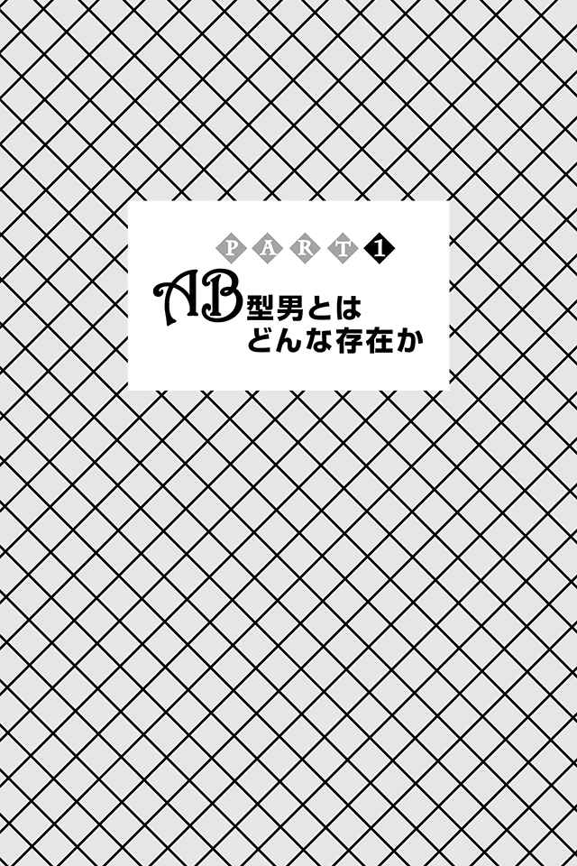
ＡＢ型男はミステリアス
ＡＢ型男はミステリアス。
感情をあらわにすることがめったにないため、「いったい何を考えているんだろう？」と周囲を戸惑わせることも少なくありません。
たまにリアクションをとってくれても、それが彼の本意と裏腹なこともしばしば。うっかり信じてしまい、痛い目に合った人も多いでしょう。
なぜ、こんなに面倒くさい振る舞いをするのか。それは、
他人に自分の本心を見せたくないから。
人一倍、繊細な心の持ち主であるＡＢ型男は、本心を見せることで起こりうるリスクをこれでもかというほど考え、そのリスクを避けるべく本心を隠しているのです。
仕事なら、本音がバレることで負けにつながるかもしれない。
恋愛なら、立場が弱くなるかもしれない。
社会生活では、寝首を掻 かれるかもしれない――。
巧みに自分の本音を隠すことこそ、ＡＢ型男が生き抜くための知恵なのです。
『００７』シリーズのジェームズ・ボンドの生き方は、まさにＡＢ型男の理想です。
任務遂行のために自分の感情を押し殺し、毎回危険と向き合いながら悠然と困難を乗り越え、敵と戦い、見事ミッションを成功させていく。
ポーカーフェイスを気取りながら、本心を見せず、スマートに複雑な世の中を渡り歩くことを、常に自身に課しているといってもいいでしょう。
ＡＢ型男は「隠れキリシタン」である
私は日々、ＡＢ型男を興味深く観察しています。
なぜならＡＢ型男はミステリアスで、とても神秘的な魅力に溢れているから。そして、そのポーカーフェイスの裏で何を考えているのか、解読したくなるからです（ほとんどの場合、わかりませんが、恐ろしいほどの秘密主義ぶりです）。
ただ、ごくまれにそのポーカーフェイスが崩れることがあります。
それは、想定外の出来事に出くわしたとき。
ＡＢ型男は、「ここからは誰も入ってくるな！」という境界線をしっかり持っています。
ほかの血液型男と比べると、自分が傷つかないための、そうとう広めのパーソナルスペースです。
もし、誰かがその境界線を踏み越えてきたら、ＡＢ型男は大パニック。そのときの気分や状況で怒ったり、逃げたりします。おそらく見たこともない形相をあなたは見ることになるでしょう。
大事なもの（自分の心）を守るためなら、鉄仮面をかぶることも厭 わない。
それはさながら、隠れキリシタンのよう。
キリスト教の信仰が禁止されていた江戸時代に、街中でどんなことがあっても、我関せずといった顔で過ごし抜き、自分たちの熱い信仰心をひたすら隠し通し、誰かが、家に入ってこようものなら、必死で策をろうして凌 ぐ――。
そんなひたむきさを持つ生き物なのです。
そんなＡＢ型男の特徴を、もっと具体的に列挙するとこんな具合になります。
●世間体がなにより大事
●自分の主張をまず言わない。相手の意見を聞きだすのがとってもうまい
●「はったり」と「こけおどし」は朝飯前
●衝突を避けるため、誰にでも意見を同調させられる合理性がある
●自信がないと、傷つけられるのを恐れてつい相手を挑発し、距離を置こうとする
●本性がバレないよう人前ではうれしいときほどヘラヘラせず、悲しいときはメソメソしない
●群れるのが嫌いで一匹狼であろうとするくせに寂しがり屋
●合コンなどで自分の本音がわからないようカワイイ女子や美人を貶 すことがある
●職場、学校などでは、「いい人」でやりとおす
●したたかで計算高い
●ポーカーフェイスが得意なので駆け引きに強い
●恋愛の駆け引きが嫌いじゃない
●冗談を言っても周りの人が冗談だと思ってくれない
●正直に言っても、周りからはウソをついていると思われてしまう（狼少年のような存在）
●「役立たず」と思われるのが怖いので面倒なこともきちんとやる
●「参りました」という言葉は自分の辞書にない（途中で投げ出すことはしない）
●好きな女性に「参りました」と言わせたい
●好きな女性に「ほっとけない男」だと思ってもらいたい
●貶されたら褒められたと思い、褒められたら貶されたと思い、斜に構えた態度をとる
●自意識過剰で我が強い
●頼られたい気持ちはあるが、プレッシャーには弱い
●ＡＢ型というくくりにされるのはイヤ
●愛情を試されていると感じると燃え上がる
●高嶺の花のような女性を口説き落としたい願望がある
●女性を感激させて「スゴイ」「こんな男初めて！」と言わせたい
いかがですか？
なかなかの面倒ぶりに絶句してしまったのではないでしょうか。
世間体を気にするあまり正直な自分を出すことができないデリケートさと自分を守るためには、「はったり」も平然とやってのけるしたたかさを併せ持つ、ポーカーフェイスの裏で、本当は情熱的な男、それがＡＢ型男なのです。
まさに、正体を隠しながら生活する「隠れキリシタン」なのです。
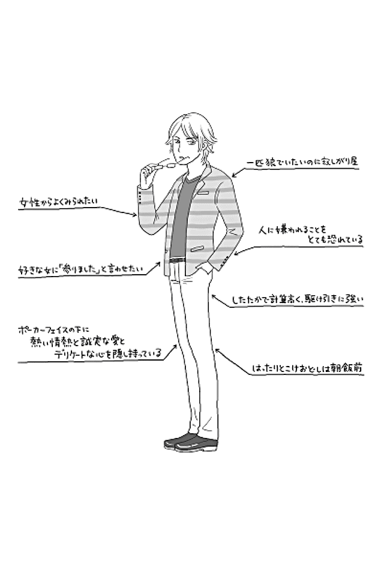
ＡＢ型男は決して器用でない
ＡＢ型男は、人の気持ちを察することが得意ではありません。
ＡＢ型男なりに相手の立場を考えてよかれと話すのですが、当たり障りのないよう言うのではなく、思ったことを素直にズバズバと言ってしまうのです。
喜怒哀楽がコロコロと変わる女性は特に苦手。不用意に怒らせては、いったいなんで怒ってしまったのだろうと、日々悩んでいます。
ただし、自力で正解にたどり着けるわけもなく、改善されることはほぼありません。まれに、怒らせてしまった相手からその理由を聞くのですが理解できるわけもなく、結局、怒らせる日々が続きます。
ＡＢ型男は自分自身の気持ちさえ、正確に伝えられないのに、ほかの人の気持ちなど正確にわかるわけがないだろうと思っています。
そんなＡＢ型男に相談なんてしようものなら、あなたはエライ目にあうでしょう。
あなた「私の彼、お風呂に入るとき必ず携帯電話を持ち込んでるんだけど、浮気だと思う？ 本人は仕事で緊急時にも対応するためって言うから違うとは思うんだけど......」
ＡＢ型男「......それは浮気だろうね。僕もまったく同じことをやったことあるよ」
あなた「あ、そうなんだ......」
身も蓋 もないとはまさにこのこと。
ＡＢ型男としては、聞かれたから正直に答えた。そこに悪意などありません。あなたのことを思って発言しただけなので、あなたの心がズタボロになっているなんて思いもしません。
あなたの言葉から、浮気の可能性を否定してほしい、せめてこの不安をわかってほしいことは明らかなのに、最も待ち望んでいない答えを突きつける。
自分を守るため空気を読み取ることは得意なくせに、人の感情を読み取ることはまったくできない。
本当に本当に腹立たしい
でも、本当に本当にどうしようもないのです。
ハッキリ言って、ＡＢ型男に期待するほうが間違っています。
ただ理解してほしいのは、ＡＢ型男はあなたを傷つけたいわけではないということ。
さらに、あなたの話もきちんと聞いているということ。
こちらの質問の意図（言葉の意味）を正しく理解し、そのうえで、いちばんいいと思う答えを、せつなくなるほど真摯に、変な期待を持たせてしまうことのないよう、的確に返答しているだけなのです。
はっきり明確な言葉で伝えさえすれば、ＡＢ型男の答えもぐっと変わり、あなたの求めているものになるでしょう。
ちなみに、ＡＢ型男は自分が器用でないことをイヤというほどしっかり理解しています。
よかれと思って発した言葉によって、大事な人を傷つけてしまう場面に直面したことなんて、それこそ数え切れないほどあるからです。
そして、その都度ＡＢ型男も傷ついています。彼にとって、大事な人を傷つけてしまう、そんな悲しいことはありません。
だからこそ、意見を求められないときは黙っておすまししているのです。
ＡＢ型男は、器用そうでいて、本当は誰よりも不器用な男なのです。
ＡＢ型男は寂しがり屋でセンチメンタル
ＡＢ型男はとっても寂しがり屋で、センチメンタルな一面があります。
普段は本音を隠そうとクールな表情を装い、ついつい一匹狼となりがちですが、心の底では誰かと一緒にいたいと思っています。
人から嫌われたくないがゆえ、自然と人と距離をとってしまうのです。
自分から距離をとるくせに、かまってもらえないと寂しく感じるのがＡＢ型男。周囲の評価も気になるため孤独感が増して、せつない気分になったり、やるせない気持ちになってしまったりするセンチメンタルな部分があるのです。
入学、入社、クラス替えなどで環境が大きく変わるとき、ふと周りを見回してみると、必ず一人や二人いる涼しげな顔で様子を見守っている男、彼らはほぼ間違いなくＡＢ型男です。
クラス替えなら、クラスの勢力、構図がある程度見えてきてから、ＡＢ型男は自分の居場所を決めます。
といっても、どっぷりどこかのグループに入るわけではありません。基本は一匹狼を貫きつつ、ふとしたときに人気者や権力者に程よく近いポジションを確保しておく、ただそれだけです。
ＡＢ型男は一匹狼でありたいのに、ずっと一人でいるのもまた、寂しくてイヤなのです。
さらに、とってもセンチメンタル。
たとえば、ベランダに〝つがいのハト〟が巣をつくったとします。
多くの人は「気持ちが悪い」「汚い」「怖い」「迷惑」とイヤがりますが、ＡＢ型男はちょっと違います。最初こそ見て見ぬフリをしますが、徐々に温かく見守るようになり、ハトとの奇妙な共同生活を受け入れます。
物言わぬハトなら気を遣う必要もなく、ＡＢ型男自身が傷つくこともないので、ＡＢ型男は少しずつ居心地のよさを感じるのです。
しかし一方で、傷つきやすく神経質な自分自身がイヤになり、ふとＡＢ型男の心には寂しさが芽生えます。すると徐々に感傷的になり、物事をネガティブな方向に考えはじめます。やるせない気持ちになったＡＢ型男はいつの間にかハトに話しかけたり、口笛を吹きながら自分の寂しさをごまかしたりします。
まさにＡＢ型男は寂しがり屋でセンチメンタル、面倒なロンリーウルフなのです。
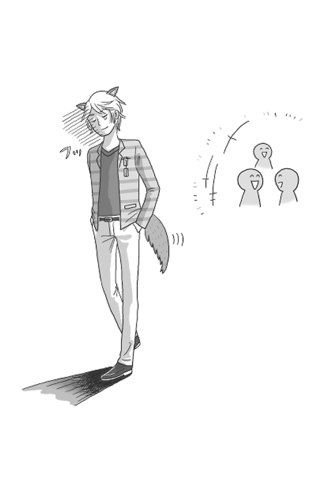
世間体が最も大事
ＡＢ型男は、世間体を気にしながら常に生活しています。
生まれつき「見栄っ張り」なので、世間体や体裁に対して尋常でない執着心を持っているのです。
では、なぜここまで見栄を張るのでしょうか？ それは、
人から嫌われたくないという気持ちが誰よりも強いから。
人の目を気にするあまり、必要以上の見栄を張って、自己防衛をしてしまうのです。
それゆえＡＢ型男にとって、自分の感情を押し殺すことなんて朝飯前。どんな状況に置かれても、まず人からどう思われるのかを考え、周囲に意見を合わせます。
人前で恥をかいたり、バカにされたり、否定されたりなんてありえません。たとえＡＢ型男の表情がクールだったとしても、心中は穏やかでないはずです。
感情を抑え、本性をひた隠しにすることに尽力し、職場や学校など、組織のなかで過ごすときは、なにより目立たないことを課し、周りの人々と同じようにあることを心がけています。
ＡＢ型男は他人とちょっとでも違うと注目されてしまうこと、そして、必要以上に注目が集まると、余計な期待をされたり、かえって反感をかってしまったりすることを知っているからです。そのため、目立たずひっそりと事を成す能力に長けています。
もし、あなたの周りのＡＢ型男が本書で紹介しているような根暗キャラではなく、悠 々 自 適 なお気楽キャラである場合は、しっかりと演じきれているということ。
その努力に敬意を表して、決してからかったりしないでください。
相手は隠れキリシタン。世間体のために隠れて暮らしていることをくれぐれもお忘れなく。
女性にはスゴイと思ってもらいたい。
ＡＢ型男は好きになった女性に、なにかと食事をご馳走しようとします。
それも少々お高めの。
ＡＢ型男は、気前よくご馳走することで、自分の凄さをあなたに見せつけることができる、と考えているからです。
たとえば、あなたがＡＢ型男に誘われ焼肉屋さんに出かけたとしましょう。
ＡＢ型男「たしか焼肉はタン塩が好きって言ってたよね？」
あなた「覚えててくれたんですか 」
ＡＢ型男「もちろんだよ！ だから今日は特上タン塩を4 人前頼んでおいたんだ！」
あなた「４人前？」
ＡＢ型男「ああ、お金のことは心配いらないよ。ここはボクが持つから」
あなた「あ、うん（そんなにたくさん食べたいわけではないんだけどな......）」
特上タンがくるとＡＢ型男はすぐに焼いてくれ、全部、あなたの皿に取り分けてくれるでしょう。
ＡＢ型男「どうぞ。君の好きなタン塩だよ。気が済むまでたくさん食べてよ！」
アピールが極端すぎて、あなたは食べにくいこと、このうえありません。
あなた「ＡＢ男さんは食べないの？」
ＡＢ型男「ああ、うん。ボクは野菜が好きなんだ。だから、気にせず食べてよ」
と言い出し、アルパカのようにサニーレタスばかりを食べるでしょう。
あなた「そ、そう？（気にするっちゅうねん！ ほら、店員さんが見てるじゃん 恥）」
店 員「（あの女のお客さん、何者？ 一人でずっと食ってる。変なカップル～）」
実はコレ、ＡＢ型男なりの気遣い。
あなたが戸惑っていることなど、まったくもって気づきません。ましてや、周りの店員やほかの客からどう見られているかなんて、ほんと、せつない男です。
そして、お会計。
ＡＢ型男は、わざわざあなたの目の前で店員を呼びつけます（テーブルチェックのお店を選んである）。
店 員「一万二千八百円です」
ＡＢ型男「じゃあこれで（一万円札二枚を伝票に挟んでポン！）」
あなた「ご、ごちそうさまでした。とってもおいしかった。ありがとう（食べた気しないわ～）」
いかがでしょうか？
これらの行動をＡＢ型男は悪気がないどころか、「オレってカッコイイ」「これで彼女もメロメロだろう」と思ってやっています。
ＡＢ型男の見栄っ張りは、生きている限りずっと続きます。
それがＡＢ型男の生き様だからです。
そして自分が気分よく見栄を張って生きるには、お金をかけることが効果的と信じて疑いません。
あなたは拒否せず、素直にオゴってもらいましょう。女性から尊敬の眼差しを浴びたい一心でＡＢ型男は行動しているだけですから。
大金を使ってしまってもその分しっかりと稼げる男なので、あなたは大船に乗ったつもりで信じましょう。
女性は自分だけのものであってほしい
ＡＢ型男は、嫉妬深いうえに、独占欲が強い生き物。
普段はポーカーフェイスをきめこんでいるくせに、気になる女性に対しては、打って変わって興味を示し、質問をします。
「ここのブランドってデザインがいいよね。どんな色が好きなの？ 来年はバッグだけじゃなく、アクセサリーも新シリーズが出るらしいよ？ 雑誌で紹介されていたんだけど、オシャレだったし、いまのファッションなら絶対似合うんじゃない？」
靴やバッグ、財布、化粧ポーチ、口紅、香水など、ありとあらゆる物について、こと細かに聞いてきます。
なぜこんなことをするのか？ 理由は単純です。
ＡＢ型男は、自分の力だけで 、大事な人を喜ばせたいと考えるので、何を買ってあげれば気になる女性が喜んでくれるのか、どうしたら感激してもらえるのか、知りたくてたまらない。なので、ついつい質問をしてしまうというわけです。
あなたを喜ばせたい、きれいになってほしい、そして自分色に染めておきたい――。
これがＡＢ型男流、女性の愛し方なのです。
それこそ、惚れた女の足の先から頭のてっぺんまで、すべて自分の手でコーディネイトするのが目標です。
もっと言うと、自分以外の男からもらったものを身につけていたら、嫉妬心がメラメラ。さらに〝いいもの〟をプレゼントして差し替えさせようとします。
女性自身が買うこともあまりよしとしません。
あくまで、ＡＢ型男自身の手で女性を染め上げたいから。
そのため、ショッピング中、ふと気づくと、すべてＡＢ型男が支払いを終えているなんてこともしばしば。
ＡＢ型男は、財布からお金を出して支払いをするスピードが、全血液型の男性のなかでもダントツ。こちらに悩むすきすら与えません。
そんなＡＢ型男に対し、「そんなの悪いわ......」とお財布を持ち出すのはＮＧ。払ってもらったときは、遠慮せず、感謝を伝えていただいてしまいましょう。
「ボクが買ってあげた洋服を着て、ボクがプレゼントしたバッグを持っている彼女はキレイだなあ」
と、しげしげ眺めては、至福の時間を過ごすことが、彼にとっての最大の喜びなのですから。
そしてもう一つ。
ＡＢ型男から質問攻めにあったときは、一つひとつ丁寧に答えてあげましょう。
もしかしたら、あなたの好みのものを取り揃えたデパートをＡＢ型男が探し出し、
「一緒に行きませんか？ 欲しい物はありませんか？」
と、誘ってくれる可能性大です。
言い換えると、難しいＡＢ型男とグッと心の距離を縮めるチャンスでもあるので、大事に過ごしましょう。
誠実さと情熱は絶対不可欠
誠実さと情熱ほど恋愛に必要不可欠なものはない。
ＡＢ型男はそう固く信じて疑っていません。
とんがっているように見えるＡＢ型男ですが、心の奥はピュアで、情熱的な一面を秘めています。
小説やミュージカルでも有名な『オペラ座の怪人』の主人公である怪人にＡＢ型男を置き換えるとわかりやすいでしょう。
19 世紀末のパリ、オペラ座には醜い素顔を仮面で覆った通称〝オペラ座の怪人〟が住んでいました。作曲家であり、奇術の天才でもある怪人はあるとき、若手女優クリスティーヌに恋をします。そして、舞台で活躍できるよう彼女に歌のレッスンを始めたのですが、その矢先、彼女には恋人がいることを知ります。なんとか愛する彼女を手に入れたい怪人は、ついにオペラ座の地下深くにクリスティーヌを誘拐してしまうのです――。
まさに、愛する人のためなら手段さえも厭 わない。この誠実さと情熱こそＡＢ型男の求める理想の恋愛。
ＡＢ型男にかかれば、破局するカップルはすべて、
「誠実さと情熱が足りなかったんでしょ」
のひと言で片付けられ、真実の愛をもった二人ではなかったということになってしまいます。
真実の愛さえあれば、どんな困難があろうともお互いの誠実さと情熱で乗り越えられると信じる。
それだけにＡＢ型男は、愛する女性との間でちょっとしたケンカやトラブルが起こったときは、問題を解決しようと全力でぶつかっていきます。
多大なる犠牲を払ってでも、好きになったあなたに自分自身を認めてもらいたい。
ＡＢ型男にとって、
真実の愛とは、己の信念で支えるものであり、その信念を貫ける自分であり続けることが、真実の愛の証明なのです。
ＡＢ型男は、自分の誠実さと情熱と同じレベルの愛情で必死に応えてくれる女性を捜し求めています。そして駆け引きをして、それを女性に試してきます。
それこそがＡＢ型男の「面倒臭さ」なのです。
ＡＢ型男はギャンブル好き
ＡＢ型男は、人一倍、ギャンブル好きです。
ＡＢ型男にとって、ギャンブルとは「男の人生の縮図」。
男のロマンだからです。
普段は静かで、控えめで、目立つことを嫌い、自分の意見をなかなか言わないＡＢ型男ですが、ギャンブルとなると人が変わります。周りがどうであろうが、ひたすら勝ちを目指し続けます。目立とうが恨まれようがお構いなし。
ギャンブル中のＡＢ型男は、まさに冷徹。
情けも血も涙もありません。
なかでもマージャンは、ＡＢ型男の本性が顕 わになります。
巧みに駆け引きしながら、相手を出し抜いて勝利をつかみ取ることに、己の人生を重ねて楽しむので、容赦なく、勝ち続けます。
各血液型と比較しながら見てましょう。
Ａ型男、Ｂ型男、Ｏ型男、ＡＢ型男の四人組が連休前に徹夜でマージャン大会をすることになりました。
大好きなギャンブルができるということで、普段はクールなＡＢ型男もテンション高め。会場もＡＢ型男が自分の家を提供してくれました。
自分のことを知られるのを恐れているＡＢ型男が自宅に人を招き入れるなんて、これはそうとうテンションが上がっているということ。
ＡＢ型男「たとえどんな理由があっても恨みっこナシの真剣勝負だ！ 俺は風邪気味でお腹が痛いから、お手柔らかに頼むよ！」
Ａ型男 Ｂ型男 Ｏ型男
「おいおい、マージャンの結果ごときで人を恨むなんてしねーよ。風邪気味だとか腹の調子が悪いとか、つまらないこと言いやがって......。ＡＢ型男なんかに、絶対、負けないぞ！」
開始から二、三時間もすると、だんだん勝敗が見えてきました。
さらに数十分、得意のポーカーフェイスと、はったりをうまく使いこなしているＡＢ型男が頭角を現してからは、ほかの三者はタジタジ。差は開く一方です。
結局、ＡＢ型男の一人勝ち。
堅実なＡ型男は勝ち負けを繰り返してプラスマイナスゼロ。
どんぶり勘定のＯ型男は、負け越して、マイナス。
負けず嫌いなＢ型男が少しプラスをつくったところで、ようやくお開きに。
Ｂ型男「よし勝ったぞ！ 俺はそろそろ帰るよ！」
Ａ型男「そろそろＢ型男くんが帰りたがる頃だと思っていたよ！」
ＡＢ型男「じゃあ今日はこの辺で勘弁してやろうか？ ワッハッハ！」
Ｏ型男「......あれ？ 俺だけが負け？ あれあれ？」
と状況がつかめず悩んでいるＯ型男を見ることもせず、「お先！」とＢ型男。
その姿を見送り、Ｏ型男も帰り支度を始めます。と、急に振り返ってひと言。
Ｏ型男「ごめんＡＢ型男くん、帰りの電車賃を貸してもらえないかな？」
ＡＢ型男「構わないけど......。返してくれなかったら十日で一割利子を請求するよ、いい？」
Ａ型男「......（おいおい借りるなら相手を選べよ、貸すほうも相手を見ろよ）」
Ｏ型男「ありがとう！ 来週には必ず返すし、お礼に飯でも奢るよ！」
Ａ型男「......（それだったら十日一割の金利のほうが安いはずだよ）」
ＡＢ型男はいちばんシワが多くてくたびれた千円札をＯ型男に渡し、Ｏ型男は「ありがとう」と述べて帰路につきました。そして、残った二人。
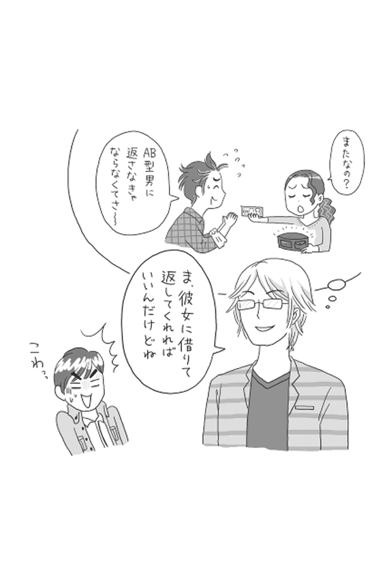
Ａ型男「彼女からお金を借りてやってきたＯ型男くんが、約束どおりの期日に返してくれると思っているの？」
ＡＢ型男「そっか！ Ｏ型男くんは、今日、彼女にお金を借りてやってきたんだっ すっかり忘れていたよ。ボクのお金、心配だな。ま、彼女に借りて返してくれればいいんだけどね」
クールに言い放つＡＢ型男の姿に、Ａ型男は寒気を覚えるのでした。
＊＊＊
さて、ＡＢ型男の性質、いかがでしたか？
ミステリアスで本心がわかりにくいが、実は情熱が人一倍あって、惹かれる男。まずは、そのことを受け止めてみましょう。
続くＰＡＲＴ２では、より具体的にＡＢ型男との接し方についてお話ししていきます。
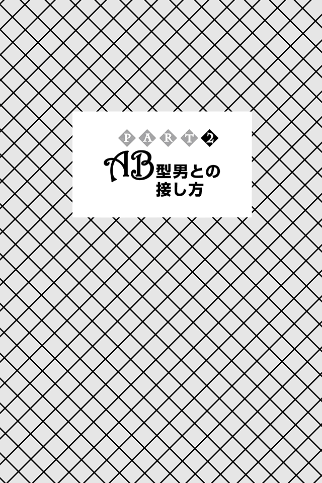
ＡＢ型男の言葉は無感情で聞く
ＡＢ型男は、いい意味でも、そして悪い意味でも、ストレートな物言いをする潔 い生き物です。
普段は、世間から嫌われたくないからと、自分の意見を口にするのを控え、得意のポーカーフェイスで周りの話を聞くことに徹していますが、少しでも意見を求められると、相手がどう思うかなど気にせず、はっきりと自分の意見を述べてくれます。
ＡＢ型男の変に媚 びたり、飾ったりしないストレートな意見は、言葉に嘘がない分信頼度が高く、参考になります。
一方で、ＡＢ型男のストレートすぎる物言いに、傷つくこともしばしば。
実際、ダメなこともオブラートに包むことなく、バッサリやられるので、腹が立った経験を持つ人は少なくありません。
「君だけが頑張っているとか、ガマンしているって思っていない？」
「男に二股かけられてまで、付き合うなんてまったく理解できないな」
「洋服と靴のバランスが全然合ってない。コーディネートが変だよ」
ＡＢ型男としては、意見を求められたからお役に立てばと思い、伝えたまでで、攻撃しているつもりなどさらさらないのに、恨まれたり、加害者扱いされてしまうなんて、たまったもんじゃありません。なので、本音を話す相手を絞っているのもそのためです。
したがって、一度でもＡＢ型男の善意を裏切るそぶりを見せてしまうと、今後二度とあなたの前で思ったことを話してくれることはないでしょう。
それはつまり、あなたを信頼できる相手ではないと認識したということでもあります。
いったんそう思われてしまうとＡＢ型男とあなたの関係には大きな溝ができてしまいます。それを避けるためにも、まずあなたはこう理解しましょう。
ＡＢ型男のストレートな物言いは、彼なりの「誠実さ」の表れであり、悪意はないということ。
ＡＢ型男から毒を吐かれたとしても、厳しい言葉で切り付けられたとしても、「なるほど、そりゃそうだ」と広い心で受けとめればいいのです。
心揺さぶられることなく、何も聞かなかったことにしてしまえば、あなたも傷つかず、ＡＢ型男も傷つきません。二人の関係も良好に保つことができます。
まさに「心頭滅却すれば火もまた涼し」の精神です。
あなたの繊細な感情や情緒をＡＢ型男に理解させようとしてもムダです。
ＡＢ型男はＡＢ型男、あなたはあなたと割り切って接しましょう。
ＡＢ型男に任せてしまう
ＡＢ型男は、負けず嫌いというより負けることをとても恐れています。
なので、人に任せることはしません。
人に決めてもらう＝人の指示に従う＝相手の言うなり＝負けと考えるからです。
ハッキリ言って、ＡＢ型男を操るのはムリです。
さらに、相手に「参りました」と言わせるのが大好き。
誰から頼まれたわけでもないのに、常に、ああでもない、こうでもないと戦略を練っては、自信満々に物事をリードしようとするので、ちょっとでも反論したり、ＡＢ型男が描いていた策略と違う指示を出したりしようものなら、そっぽを向かれるだけ。
仮に、立場、状況の関係で指示に従ったとしても、そのポーカーフェイスの内側では「ほんと、わかってないよな～」と舌を出しています。
そんなＡＢ型男とうまく付き合っていこうと考えるなら、よほどのことでない限り、ＡＢ型男に任せてしまうことです。
あなた「来月転勤する課長のお別れ会、ＡＢ型男さん、どこかいいお店知らない？」
ＡＢ型男「（ポーカーフェイスで）ないこともないかな」
あなた「さすがＡＢ型男さん！ 一応、参加者は部署全員の十五人くらいなんだけど、どうかな？」
ＡＢ型男「（ポーカーフェイスのままで）予算は？」
あなた「一人頭、五～六〇〇〇円で収めたい。飲み物代も入れて、ほかにも必要なものがあれば、この予算の中から。この件、ＡＢ型男さんにお任せしてもいい？」
ＡＢ型男「（当然ポーカーフェイスで）まあ、いいけど（見てろよ！ 絶対『参りました』と言わせてやるからな）」
ＡＢ型男に任せた後は、口出しはしないこと。
ＡＢ型男は、頭がよく、人の評価を気にするうえに人を喜ばせたいという気持ちもあるので、大丈夫です。
あとはＡＢ型男からあがってきた案に対し「ＹＥＳ」と答えればＯＫ。
たとえあなたが自分の考えを持っていても、従順になることです。
ＡＢ型男はあなたを「自分のことをわかってくれる存在」だと認識し、その繰り返しによって、信頼関係が築かれ、本心を見せてくれるようになるでしょう。
まずは、あなたがＡＢ型男というスペシャルな男を将来的に操縦するための最初の一歩と理解しましょう。
「あなた任せ」の女になりましょう。
【あなたまかせ（彼方任せ）】（「デジタル大辞泉」より）
１．他人の意のままにすること
２．阿弥陀仏の力に任せること。他力本願
問いかけ口調で話しかける
ＡＢ型男は、無防備に思っていることを顔や言葉に出さない主義。
都合が悪いときは聞こえないフリをしたり、面倒くさいときは演技をしてキレイごとを言ったり、存在をアピールしなければならないときは誰かの主張をさも自分の主張のように語ったりするなど、本心を見せないことに関しては天才的なので、どう接すればいいのか、迷う人も多いでしょう。
そんなＡＢ型男とうまくコミュニケーションを図るには、コツがあります。それは、
質問形式で話しかけること。
といっても、いきなりＡＢ型の心の奥に入り込むような質問は警戒されるだけ。
はじめのうちは、ＡＢ型男にあまり関係ないような話題、世間話や共通の友達や環境に関する質問を投げかけて、言葉のキャッチボールができる間柄になることが大切です。
話の内容が深くなくても、ＡＢ型男に実害ないレベルで、日常会話より一歩踏み込んだ会話をすることで、信頼関係を深めることができます。
あなた「ねぇＡＢ型男さん、〇〇ちゃんと× × くんが付き合っている噂をどう思う？」
ＡＢ型男「僕も二人の関係は聞いたことがあるけど、よくわからないな。とくに君が僕にどんな答えを求めているのかがわからないんだ。ごめんね」
あなたが質問をぶつければ、よほどＡＢ型男にとってイヤな質問でない限り、わかる範囲で率直な意見を返してきます。
ポツポツとした言葉のやり取りになるかもしれませんが、ＡＢ型男の対応に少しずつ温かみが出てくるはずです。そうしたら、少しだけ歩み寄り、ＡＢ型男のちょっと関係のあるテーマの質問をしてみるといいでしょう。
ただし、ＡＢ型男は自分が噂話や問題提起の発信源になることは絶対に避けたいと考えています。
周囲の人から反感を買うきっかけをつくりかねないテーマは、絶対にやめましょう。
ＰＡＲＴ１でもお話ししたように、ＡＢ型男がごまかしたりするのは、本心がバレて嫌われたくないから、そして傷つくのがイヤだから。
つまり、ＡＢ型男に「この女性なら話しても大丈夫だ」と思ってもらえたら、ごまかしやはったりも減っていきます。
そしていつしか、話の内容もぐっとお互いに近い部分になっていくはずです。
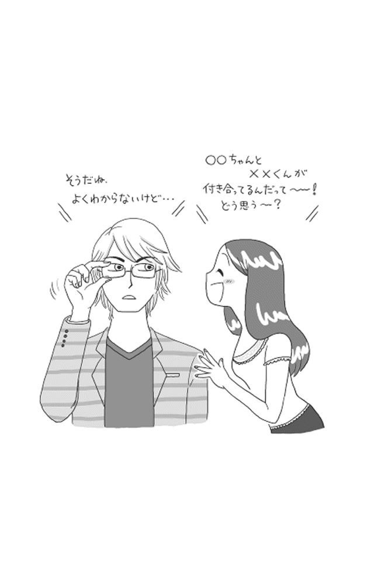
ときどき冷たく突き放す
ＡＢ型男があなたにもっと関心を持つための効果的な方法があります。それは、
ＡＢ型男に、突然、冷たく接することです。
たとえば、あなたとＡＢ型男さんが喫茶店で仲良く旅行の計画をしていたとします。
きれいな旅館でおいしい食事が食べられるプランを見つけ、二人で盛り上がった、まさにそのとき、ふと何かを思い出したかのように、
「あっ、急用があったんだ、後で話そう」
と言って、喫茶店をぷいっと飛び出して帰ってしまいましょう。
コツはわざとらしく、しれっとした態度をとること。
人の気持ちに鈍感なＡＢ型男でも、さすがに「何かおかしい」と気づき、戸惑い、オロオロします。
「俺、何かしたかな。怒らせることをしちゃったんじゃないかな。どうしよう、嫌われたらどうしよう」
そして、悶 々 と悩むでしょう。
もしかしたら、生きた心地がしないかもしれません。
あなたがすべきことは、しばらくしたら、普段と変わらないテンションで
「さっきはごめんね。旅行楽しみだね」
と言いながら、ＡＢ型男のところに戻ることです。
気をつけるべきは、必ず「ごめんね」と言葉にして謝ること。
このひと言で、ＡＢ型男はホッと一安心し、緊張がほぐれます。そして、強く思うはずです。
「仲良くなったからといってまだまだ油断しちゃいけないな！ もっともっと彼女のことを大事にしなきゃ。もっともっと努力しなきゃ」
もともとＡＢ型男は、大事な人のためなら、できる限りのことをしようとする生き物。不器用なりに、あなたのことをもっと知ろうと努力するようになります。
ＡＢ型男があなたのご機嫌をとってくることで、二人の関係はますます深まるでしょう。
なかなかＡＢ型男との距離が縮まらないなと思ったときは、この方法がオススメです。ただし、やりすぎると効き目がなくなるので、タイミングを見計らって、試しましょう。
ＡＢ型男を振り向かせるには
ＡＢ型男の心を射止めるには、まず、自分磨きをしてください。
あなたがなんの準備もなくＡＢ型男にアタックすれば、撃沈するのがオチでしょう。
気になるＡＢ型男を確実にモノにしたければ、ほかの男が一目置くような高嶺の花を目指すべきです。
ここでいう高嶺の花とは、女性の外見だけに限ったものではありません。
容姿端麗はもちろんですが、「皆から好かれている」「性格がとびきり美人」「国家資格を持っている」など、どんな要素でもいいのです。
世間体に縛られたＡＢ型男にとって大事なのは、「なんて素敵な彼女（奥さん）！」と周囲の人々が羨む女性かどうか。
もっとわかりやすく言えば「女性の格付けランキング」で上位にランクインする女性であればＯＫ。
ＡＢ型男がその女性を好きかどうかは、さほど重要でなく、周りが羨む女性であれば夢中になれる。
まさにＡＢ型男は恋に恋する思春期の乙女なのです。
そのため、あなたはひたすら自分磨きに徹しましょう。
さらに周囲から高嶺の花として認められるためにも、男性からの求愛があれば、とことん断りましょう。
あなたが難攻不落の女性にさえなれば、あとは簡単です。
多くの男性を断り続けてきた女性として、あなたはＡＢ型男に興味を持った素振りをして近づけばいいのです。するとＡＢ型男は、
「皆が憧れの〇〇ちゃんが自分に興味を持ってくれている？ これはチャンスだ！」
とあなたに近づいてくるでしょう。
もちろん、あなたは高嶺の花として振る舞う必要があります。
ＡＢ型男がデートなどに誘ってきたとしても、あなたはすぐに返事をしてはいけません。多少は躊躇し、じらしたうえで返事をしましょう。
あなたが意識すべきは、高嶺の花としてどのような立ち振る舞いがベストかどうかです。どんなときも自分磨きを怠らないように心がけましょう。
ＡＢ型男に誘われたときの断り方
ＡＢ型男は、なかなか心を許さない分、一度好きになった女性は、そう簡単にあきらめません。
それどころか、何度も何度も積極的にアプローチしてきます。
あなたがしっかりと誘いを断るには、ＡＢ型男に興味がないことを正確に伝えること。
たとえば、こんな感じです。
ＡＢ型男「軽く食事でもどう？ よかったらデートしようぜ！」
あなた「ごめんなさい。私、その日都合が悪いの......」
具体的なデートの日程を出される前に、にっこりと、それでいて笑顔で断るのです。
たいていの男性はこれでＯＫ。ただ、ＡＢ型男は違います。
愛情を試されているのだと勘違いし、より猛アタックしてくるでしょう。
しかも、そこは頭のよいＡＢ型男、今度はあなたに断られないよう、デートの日程から聞いてきます。
ですが、あなたは最後まで話を聞かず、途中で遮りながら「ＮＯ」と言うべきです。
ＡＢ型男「○○さん、× 月× 日なんだけど、あの......」
あなた「ごめんなさい。私、その日はお腹が痛くて都合が悪いの......」
その日の体調なんてわからない――。
そりゃそうです。でも、わからなくてもいいのです。
大切なのは、「絶対ムリ」という気持ちを、明確に伝えること。
どうやっても、あなたが「ＹＥＳ」と答えてくれるつもりがないとわかれば、ＡＢ型男は表面上は笑顔を取り繕いますが、心では泣きそうになっているでしょう。
そんなかわいそうなＡＢ型男に負けそうになるかもしれません。
でも、ぐっとこらえ、十秒数えてください。
そして、ＡＢ型男の顔をじっくり眺めた後、小さな子どもを諭すようにひと言、こう伝えましょう。
「ごめんなさい。私はあなたが思っているような女性じゃないの。だからあなたに気を持たせるようなことは言えないわ！」
わたしはあなたに興味がないし、決して冗談で断っているわけでもない。
言葉でも態度でも必ずこの姿勢を貫きましょう。
あなたが無表情のまま、それ以上何も言わずに通り過ぎて行ってしまい、ＡＢ型男をついに振り向きもしなければ、ＡＢ型男はもはや自分に対してまったく興味がないと理解してあきらめるでしょう。
ＡＢ型男との別れ方
ＡＢ型男と本気で別れたい場合は、別れたい旨を言葉にして明確に伝えたうえで、完全に音信不通状態になることです。
むしろ、音信不通状態にならない限り、ＡＢ型男と別れることはできないでしょう。
「二人の関係を終わりにしたい」と伝えても、人の細かな心の変化を察するのが苦手なＡＢ型男は「彼女は何か駆け引きをしているんだな」と大勘違いをするのがオチ。
一〇〇歩譲って「何か不満があるんだな」と思ったとしても、まともに受け止めてくれないからです。
そんなＡＢ型男にあなたがすべきことは、本気で別れたいんだということを知らしめ、理解させること。
その最も有効な方法が「無視」なのです。
不器用なＡＢ型男であっても、さすがに無視されると、不穏な状況であることに気づきます。
そして、音信不通状態が続くことで、あなたが本気だったことをようやく「理解」します。
これで、終わりです。
先にもお話ししたとおり、ＡＢ型男は、傷つくことが大嫌い。自ら傷つくとわかっていることは決してしません。
つまり、あなたに「なぜ、音信不通にするのか」と尋ねたり、関係性を突き詰めることはしません。ＡＢ型男にとって、振られることは「敗北」。わざわざ負け戦をする理由などないうえに、傷つけあうことも望まないからです。
反対に音信不通にしない限り、「駆け引きをしているだけで、本当に別れようとは思っていないんだな」と、大きな勘違いをしているＡＢ型男にあなたはまとわりつかれ続けます。
可能性があると、彼が思う限りずっと離れることはできません。
話をしてわかる相手ではありません。
別れを決めたら、三 行 半 を突きつけて、さっさと立ち去ってください。
それが、お互いのためなのです。
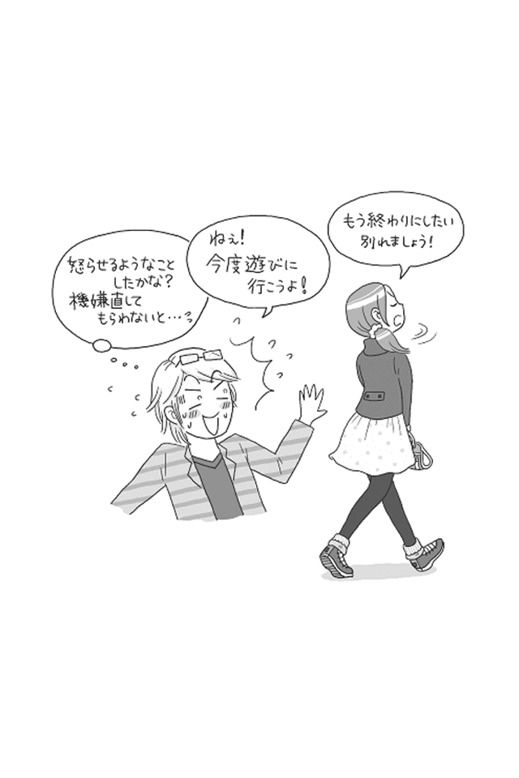
＊＊＊
さて、ＡＢ型男への接し方、いかがでしたか？
これまでいったいどうすればいいの？ と迷ったり失敗したりしていたシチュエーションもあったのではないでしょうか？ 今後はうまく活用して乗り切ってくださいね。
続くＰＡＲＴ３では、ＡＢ型男とうまく付き合えるようになる方法（「ＡＢ型男取扱マスター」になるレッスン）についてお話ししていきます。
立派なＡＢ型男取扱マスターになるには
ＡＢ型男は、「愛されたい」という願望を人一倍強く持っています。
いつもクールなポーカーフェイスでその願望を隠していますが、そうとうな強さです。
ではそんな、愛情を渇望してやまないＡＢ型男を上手に取り扱うには、つまり、立派なＡＢ型男取扱マスターになるには、どうしたらいいのでしょうか。
あなたがその願望をうまくＡＢ型男の力になるよう転換させてあげれば、あなたもＡＢ型男も幸せな関係を築くことができます。それには、
あなたがＡＢ型男のありのままを受け入れてあげること。
〝女神〟のように両手を広げ、温かく迎え入れてあげてください。
人からすべてを受け入れてもらう機会が少ないＡＢ型男にとって、あなたはそれだけで特別な存在。あなたから愛情を得ようと、そしてあなたに幸せを感じてもらいたいと思うようになります。
そして、安心感、心地よさを覚えるようになり、ＡＢ型男とは思えないほど素直な姿を見せてきます。
ただし、あなたがＡＢ型男の言動に振り回されるようになると、二人の関係はとたんに冷え込みます。
ＡＢ型男は繊細なので、あなたの変化に気づき、本心を伝えることに不安を覚え、だんだんと隠すようになってしまいます。
ＡＢ型男に何があっても、何を言われても、安定していること。
それ以上に大事なことはありません。
これがＡＢ型男と幸福な関係をつくる唯一の方法です。
さらに、あなたという存在がいることで自信をもって行動できるようになるので、ＡＢ型男自身が人として輝き始めます。
その結果、ＡＢ型男があなたの存在をより大切に思い、関係も良好になってきます。
つまり、ＡＢ型男の言葉、言動に傷ついたり、振り回されたりすることなく、彼のすべてを受け入れ、彼の魅力、可能性を引き出し、発展させていく立場、「ＡＢ型男取扱マスター」として、あなた自身が成長していくことが求められてくるのです。
自分をさらけ出すのが大の苦手で、恐れすら感じているＡＢ型男が、頑なに隠しているやさしさや魅力、可能性を、どんなプロセスで引き出すべきなのか――。
その具体的な方法を「ＡＢ型男取扱マスター」になるためのレッスンとして、ＰＡＲＴ３では紹介していきます。
Ｌｅｓｓｏｎ01 常に愛を伝え続ける
「結局、俺のことそんなに好きじゃないもんね」
ＡＢ型男はよく、こうして彼女や妻からの愛情を否定的な言葉で確かめます。
「私のこと好き？」とちょくちょく聞いてくる女子のように、ストレートに聞くわけではないので、真意に気づかず、適当に答えてしまうと、後でエライ目に遭います。
ＡＢ型男は人から欺かれることを異常に恐れています。
惚れた女性に対してはなおさら。
裏切られたり、傷つけられたりしようものなら、二人で地獄へ落ちようと決意しています。
言い換えると、愛がある限り、幸せに暮らせると信じ、幸せに暮らすための努力は惜しまないと考えています。
まさに狂気の沙汰。
でも、この狂気を持つからこそ、ＡＢ型男は魅力的なのです。
ＡＢ型男取扱マスターは、ＡＢ型男の「狂気」を受けとめて、彼への愛情を態度で示し続けることが大切。
言葉だけでは不十分なので、行動することが大事と肝に銘じておきましょう。
ＡＢ型男は満ち足りることを知りません。
昨日より今日、今日より明日と、愛する人の愛を感じ続けたいと願っています。
そして、愛する人にも愛を求めてほしいと願っています。
ＡＢ型男取扱マスターであるあなたが愛情を示し続けないと、ＡＢ型男は不安になり、愛を試そうとさまざまな行動を起こします。あなたが伝えているつもりであっても、ＡＢ型男にとって満足できるものでないと、つまり、心から安心できるものでないと、行動はどんどんエスカレートし、狂気じみてきます。
彼の行動を止めるには、彼が満足するカタチ、量で伝えていく以外ありません。
「そんな大げさな。一緒にいるんだから、毎日言わなくたってわかるでしょ」
なんてことは、ＡＢ型男には通用しません。冷めた態度は厳禁です。
なにせ、人の気持ちを察するのが超苦手なのですから。
ちょっと面倒かもしれませんが、反対にそれができている限り、ＡＢ型男は二人の関係、そして、幸せな未来のために尽力し続けてくれ、良好な関係が築けます。
狂気も含めて受け入れ、愛がある限り、気持ちを伝え続けてあげましょう。
Ｌｅｓｓｏｎ02 定期的に「愛の踏み絵」をする
愛がある限り、幸せに暮らせると信じ、幸せに暮らすための努力は惜しまないＡＢ型男ですが、人の気持ちを察したり、機微を読み取ることが得意ではないため、その努力の方向がズレてしまうこともしばしば。
ＡＢ型男取扱マスターは、その誤りを知らしめ、正しい道へ誘 わなければなりません。
そこで用意すべきなのが、「愛の踏み絵」。
ＡＢ型男が成長するための試練です。
ＰＡＲＴ１で、ＡＢ型男は隠れキリシタンだとお話ししました。
江戸時代、迫害を受け続けた隠れキリシタンたちの信仰心を思いがけず強固にしたもの、それは「踏み絵」という試練でした。
それと同じ「愛の踏み絵」を用意し、そっと置く、それだけでＯＫです。
ＡＢ型男は試練があるほど、情熱に火がともり、成長につながります。
ＡＢ型男に与える「愛の踏み絵」とは、過去のダメ出しです。
どうやってあなたを愛したらいいのか、何をすればあなたが喜ぶのかをわかりやすく教えてあげましょう。
「今だから言うけど、本当はそうじゃなかったの」と、ＡＢ型男との過去の出来事や立ち居振る舞いを否定するのです。たとえばこんな感じです。
ＡＢ型男取扱マスター「久しぶりにスペイン料理を食べて、ふと思い出したんだけど、去年のクリスマスに行ったスペイン料理、あまり口に合わなかったの。あと、お店の雰囲気もちょっと苦手だった」
ＡＢ型男「なぜそんなことを今さら言うんだい？ あのときは、なにも言ってなかったじゃないか」
ＡＢ型男取扱マスター「だって、あなたを悲しませたくなかったんだもの。ただやっぱり、これからも一緒にご飯を食べていくなら、伝えておくべきだと思ったのよ......」
変な策はいりません。突然つぶやき、悲しい顔をすることがポイントです。
ＡＢ型男は、一瞬こそ言葉を失うものの、真剣な表情でこう言うはずです。
ＡＢ型男「......（ショックで動揺中）そうだったんだ、言ってくれればよかったのに......。いや、俺が気づけばよかったんだよね。そんな思いをさせないようもっと努力するよ」
そして実際に、ＡＢ型男はこれからどうやってＡＢ型男取扱マスターであるあなたを満足させてあげればいいかを、真剣に考え、そして習得するでしょう。
なぜなら、どんな障害だって乗り越えることができる不屈の精神を持った男、それがＡＢ型男ですから。彼が必死になってその踏み絵を踏み、障害や苦難を乗り越えることで、ＡＢ型男取扱マスターであるあなたも、ＡＢ型男も幸せになるのです。
ただし「愛の踏み絵」は、人格に関する話や生き方に対するダメ出しはＮＧ。
あくまでも、出来事や行動、言動についてのみです。
なぜなら、「愛の踏み絵」は攻撃の道具ではなく、成長のためのもの。ここを間違えると、二人の関係はあっという間に終わってしまうでしょう。
Ｌｅｓｓｏｎ03 そっけない態度をとる
ＡＢ型男との関係を強固にするには、ＡＢ型男にとってかけがえのない女性となることにほかなりません。
それには、ＡＢ型男が心から求める、一番の願い事をかなえてあげることです。
ＡＢ型男の口から素直に聞きだすことは至難の業ですが、彼らはとてもシンプルなことを願っています。
「永遠」です。
ＡＢ型男は、愛する女性、つまり「女神」との永遠の愛（よくある「ラブ・フォーエヴァー」「フォーエヴァー・ラブ」）を心から願っているのです。
そのためなら、なんだってしようと思っていますし、実際します。
隙あらば、ＡＢ型男取扱マスターであるあなたのことを感激させようとしたり、他人に負けまいとして頑張り過ぎて過剰なことをしたりしてしまうなんてザラです。
ＡＢ型男取扱マスターは、そんなＡＢ型男の気持ちを受け止めたうえで、「女神」として君臨しなければなりません。
「女神」としての役割は次の二つです。
●ＡＢ型男の心を救済する
●ＡＢ型男が頑張る理由を与える
ＡＢ型男の心を救済するには、彼が抱き続けているプレッシャーをほぐし、気持ちを楽にし、ニュートラルに戻してあげることです。
つまり、彼が求めてやまない「永遠」を約束してあげるのです。
そうすることで、妙なプレッシャーからは解放されます。
ただし、それだけでは関係を続けていくことは難しい。そのため、二つ目の役割が必要なのです。
ＡＢ型男が頑張るのは、あなたの気持ちを手に入れたいとき。
そっけない態度をとればとるほど、ＡＢ型男は俄然、燃え上がります。
「僕がもっと頑張れば、もっともっと女神を僕のほうに向けて、僕だけの女神にすることができるはず」
なので、この気持ちをうまく使うのです。
まずは、どんなときも次のことを守るよう、ＡＢ型男と約束してください。
●勇気を出して、常に前向きでいること
●誰に対しても余裕を持って、笑顔で接すること
この二つの約束をＡＢ型男が守ることができれば、ＡＢ型男は花も実もある男に成長することができます。
もちろん成長には継続が大切。毎日、この二つの約束を守り続けていることができているかどうか確認しましょう。
そして、守れているときは、めいっぱいやさしくしてあげてください。
反対に、ＡＢ型男が守れていないときは、これ以上ないというほどそっけなく接しましょう。ＡＢ型男を不安に落としいれ反省させるのです。
こうすることで、ＡＢ型男の心をうまく操縦できるようになり、彼との関係は一気に濃密になります。
ＡＢ型男に「永遠」を約束してあげること。
二つのプロミスを守れないときは気がない素振りをして冷たく接すること。
ＡＢ型男取扱マスターがこの姿勢を取り続ける限り、ＡＢ型男は成長し続けるでしょう。
Ｌｅｓｓｏｎ04 叱るときは冷ややかに
周囲の目を気にするあまり、ＡＢ型男はときに誤った判断をしてしまいます。
たとえば立場が強い人の意見には同調し、弱い人には傲慢な態度をとってしまうなんてこともありえるでしょう。このようにＡＢ型男が間違った判断をした場合、ＡＢ型男取扱マスターはＡＢ型男を冷ややかに叱るべきです。
ＡＢ型男を叱るときには、やさしく指摘しても意味がありません。
「あなたのそういうところがイヤ！ じゃなかったらもっと好きなのに」
などと、しっかり、ハッキリと、それがたとえ自分勝手な都合であってもよいので、厳しめの口調ではっきり伝えましょう。
何度も言うように、ＡＢ型男は人の気持ちを察するのが苦手。ぼかした言い方は、誰の得にもなりません。
また、理論的に言うよりは、ＡＢ型男に失望させられてしまってガッカリしたふうに言うほうが、ＡＢ型男には効果的です。
愛があるから多大な要求を突きつけているのだと感じることができ、ＡＢ型男の情熱が燃え上がることになるからです。
「もうＡＢ型男さんには失望させられたわ！」
「言い訳するなんて男らしくないわよ！ もう顔も見たくない！ これ以上、私を失望させるようなことはしないでよ！」
これぐらい言ってしまってもＯＫです。
なぜなら、ＡＢ型男取扱マスターが、冷ややかな態度をとることで、ＡＢ型男は「嫌われたくない」一心で、ますますあなたの期待に応えようと、新たな努力を全力で始めるから。多少こっぴどく突き放しても大丈夫です。
ＡＢ型男が努力せざるを得ない場面をつくり出してあげることで、ＡＢ型男の力を引き出すことができるのです。
ＡＢ型男がかわいそうに思えたとしても、ここは厳しく叱りましょう。
すべてはＡＢ型男の将来のため。
あなたが厳しくＡＢ型男の欠点を指摘することで、ＡＢ型男は男として一皮も二皮もむけて大きくなるのですから。
Ｌｅｓｓｏｎ05 欠点をマネしてみせる
クチャクチャと音を立ててご飯を食べる。
くしゃみをするときに手でおさえない。
人に向かって平然と指を指す――。
ＡＢ型男はこうした行動を一切とりません。
「自分が他人からどんなふうに見られているのか？」を考え、自分なりにセルフプロデュースできる賢い男だからです。
さらに、日頃から自分の立ち振る舞いを客観的に分析できているという自負もあるでしょう。
とはいえ、本人が自覚できていない欠点、悪い癖は必ず残っているもの。
周りの人が欠点や悪い癖を指摘しても、ＡＢ型男はなかなか素直に耳を貸すことはありません。
そこで、あなたはＡＢ型男取扱マスターとして、本人が気づいていない欠点、悪い癖、立ち振る舞いを改めるよう仕向けることが求められます。
ではどうすればいいか。
それは、あなたがＡＢ型男の欠点や悪い癖を、彼の目の前でマネすること。
それも、ついうっかりやっちゃったという体 でマネをし、その後、こう言い放つのです。
ＡＢ型男取扱マスター「やだっ、ＡＢ型男さんの癖がうつっちゃったわ」
ＡＢ型男は、思ってもみなかったあなたのひと言に心から驚くでしょう。
そして、自分の欠点や悪い癖があなたにうつってしまったことを後悔するはず。
大好きなＡＢ型男取扱マスターが、自分と一緒にいることで悪い影響を受けているのですから。
ＡＢ型男はすぐに、マスターがマネしてしまったその癖、行為を直そうと、すぐに努力をし始めるでしょう。
ＡＢ型男は、プライドと自尊心が高い分、外野がうるさくすればするほど、頑なに受け入れなくなります。自分の心とメンツが傷つく可能性があると、身構えるからです。
そんなＡＢ型男の性格を把握したうえで、気づきを与え、後は本人に任せておけば、自分の欠点を自分で直すことができるでしょう。
Ｌｅｓｓｏｎ06 プレゼントはオーバーに喜ぶ
ＡＢ型男は、惚れた女性のためなら必要以上に贈り物をします。
ＡＢ型男取扱マスターとして、ＡＢ型男からの贈り物は絶対に断らないでください。
ＡＢ型男は贈り物をもらった女性の喜ぶ姿を見て、二人の距離が縮まったことを実感します。ゆえにＡＢ型男取扱マスターはＡＢ型男からどんなプレゼントをもらおうともしっかりと喜び、言葉や態度で感謝の気持ちを伝えることが必要です。
たとえバラの花束１００本や純金のネックレスなど、「正直、そんなの貰っても困る......」と思うものでも、しっかり喜んでください。
そうすれば、ＡＢ型男は満足し、ますますあなたのために尽くすはずです。
あなたに欲しいものがある場合は、それを買ってもらうのも手です。
ただしそのときは、ＡＢ型男に直接伝えるのではなく、さりげなくアピールしましょう。
ＡＢ型男は自分の力だけであなたを喜ばせたい生き物。
あなたからの指示で買うというのは面白くありません。
欲しいなと思うものが見つかったら、ＡＢ型男との会話で気になるブランド名を繰り返して言う、雑誌の欲しい商品に折り目をつけてＡＢ型男の目に触れるような位置に置いておくなど、わなを仕掛けておけばＯＫ。
賢く目ざといＡＢ型男はすぐにピンときて、喜び勇んでプレゼントしてくるはずです。
さらにこのさりげないアピールは、ＡＢ型男の支出を減らしたい場合にも有効です。
あなたが安めの品物に興味を示せば、自然と支出が減ってきますし、ムダなものを買わせることもなくなります。
ＡＢ型男にとって贈り物をするのは見栄を張ることにもつながるので、二人が良好な関係を築くためにも、贈り物を断らないこと。
さらに、オーバーに喜んであげましょう。
大丈夫。優れた金銭感覚を身につけているＡＢ型男なので、借金や破産をするまでお金を使いこむことはありません。
安心してもらってあげましょう。
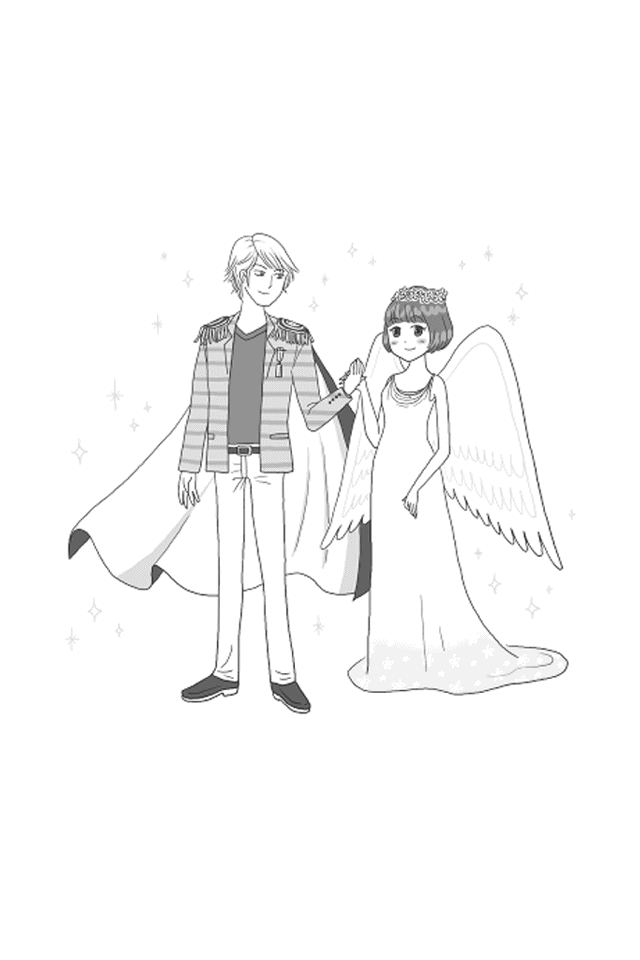
Ｌｅｓｓｏｎ07 必ずすぐにリアクションをとる
ＡＢ型男は自分を認めてほしいと、どの血液型男よりも強く思っています。
恋心を抱くＡＢ型男取扱マスターにはなおさらです。
愛する人に認めてもらい、愛してもらうことで、本人のテンションはぐっと高まります。
つまり、ＡＢ型男とよりよい関係を築いていけるかどうかは、
ＡＢ型男取扱マスターのリアクション次第なのです。
ＡＢ型男は、常に愛を欲しがる生き物。
昨日も今日も明日も明後日もずっと愛する人の愛を感じ続けたいと願っています。
「暇なときはいつでもいいからメールをちょうだい」
と口では言っていても、本心はこう考えたほうがいいでしょう。
「本気で僕のことを好きだったら、暇じゃなくてもすぐに連絡があるだろう」
そして、ワクワクドキドキしながら返事を待ち続けています。
ところが、返事が一時間経っても二時間経ってもこないと、だんだんとテンションもやる気も下がってしまいます。
そして、「もしかして嫌われたのかな？」などと、マイナス思考に突入。あなたとしては、仕事で忙しかったり、なかなか予定を確定できる状況になかったりというまったくＡＢ型男とは関係のない理由で、返事ができなかっただけなのに、気づけばＡＢ型男との心の距離が空いてしまったなんてことに。
そこから元の関係に戻すには、そうとうな時間とやりとりが必要です。
ＡＢ型男とうまくやっていくには、どんな状況に合ったとしても、とりあえずすぐにリアクションをとること。
それも、テンション高めに反応することです。
たとえば、ＡＢ型男から
「今度の誕生日、何かほしいものはある？ 返事はいつでもいいから教えて」
とメールで聞かれたとします。こんなのすぐに答えられるわけはないのですが、それでも、ＡＢ型男取扱マスターとして、すぐに返事をしてください。
なぜなら、ＡＢ型男がその返事をすぐに聞きたがっているから。
このときＡＢ型男は、丁寧で確実な返答は求めていません。あいまいでもＯＫです。
ＡＢ型男がプレゼントするということに対し、あなたがどんなリアクション（喜ぶのか、困るのかなど）をとるのか、それが知りたいだけ。
「わあ、感激だわ♥ とってもうれしい。 プレゼント考えてみるね 」
などと、うれしそうな返事をくれたら、ＡＢ型男の気分は最高潮。素敵な誕生日にしようと決意し、意欲が湧いてきます。
プレゼントの指定がなくても関係ありません。できる限りあなた好みの贈り物を探してくれるでしょう。
ＡＢ型男から何かしらのアプローチ、提案があるときは、テンションが最高潮に達しているとき。
その状態のときに、あなたからのひと言があるかないかで、ＡＢ型男のテンションも、そして二人のあり方も大きく変わります。
ＡＢ型男からのアプローチには、必ずすぐにテンション高めのリアクションをとりましょう。
Ｌｅｓｓｏｎ08 大きなアメをプレゼントする
ＡＢ型男は、とかく「世間体」という鎖でがんじがらめになっています。
周囲の目を気にして自分の評価をよくしたいと思うがあまり、ときには成功や出世を目前にしてプレッシャーに押しつぶされてしまうことも少なくありません。
こうした失敗をしないためにも、ＡＢ型男取扱マスターはＡＢ型男の「世間体」という呪縛を取り除いてあげることが必要です。
その効果的な方法が、「こけおどし」です。
こけおどしとは、なんとなく楽しい気持ちになる駄菓子や玩具をタイミングよく与えることで、世間体以外のことに気持ちが向くように誘導してあげることです。その場限りの効果しかなくても、それで十分なのが「こけおどし」の特徴でもあります。
以前、私は中国のこんな話を聞いたことがあります。
気難しい性格が原因で人とうまく付き合うことができない男がいました。
彼は、毎日部屋に閉じこもってタバコを吸っていたのですが、その影響か、いつしか肺を患ってしまったのです。
ですが、どうしても長年の習慣になっているタバコをやめることができません。
そこで東洋一といわれる易者に相談することに。
易者は彼の人相を凝視すると、突然、大きなアメを取り出し、こう言いました。
「これは素晴らしい人相だ！ あなたほど運の強い男性を見たことがありません！ あなたのラッキーアイテムは大きなアメです。これを舐めながら大通りを歩いているだけで、欲しい物がすべて手に入るでしょう！」
男は大喜びで大きなアメを舐めながら、くる日もくる日も街中を歩き回りました。
大の男が昼間からうれしそうに大きなアメを舐めて歩いているので、街中の人が面白がって声をかけてきました。
そのうちに「家に寄っていきなよ」と言われてお茶や食事をご馳走になって、さらに人々と話すようになり、いっぱい友達もできました。男はそのなかで知り合った人の仕事を手伝うようになり、あれよあれよと美人の嫁さんももらい、商売まで任されることとなりました。
するといつの間にか、男はタバコを吸うのを忘れ、肺の病も治っていたのです。
易者の与えた大きなアメが、彼の人生を変え、そして人とうまく付き合うことができないという欠点を取り除いてくれたのでした。
ＡＢ型男もこの男と同じです。
世間体を意識してしまうばかりに、自分の可能性を閉じ、自分を守ることに執着するＡＢ型男に必要なのは〝大きなアメ〟。
それを、ＡＢ型男を成長させる立場であるＡＢ型男取扱マスターは与える必要があります。
たとえばＡＢ型男だけが、上司から内々に昇進の一報を告げられたとしましょう。
するとＡＢ型男は嬉しい反面、焦ります。自分だけが同期や先輩を差し置いて出世すれば、必ず反感を持たれてしまう。もし辞退できるのであれば、上司にかけあって辞退する選択もありなんじゃないか......。
そんなときにＡＢ型男取扱マスターは、ＡＢ型男に〝アメ〟を与えるのです。一日限定〇個のおいしいスイーツでも、どこか気晴らしにデートへ誘うことでもいいのです。大事なのは、ＡＢ型男が悩んでいる矛先を変えること。そうすれば、一時の気の迷いはあるものの、ＡＢ型男は気分転換をしながら自分なりに悩みを解消します。
ただし、ＡＢ型男に対して絶対にしてはいけないことがあります。それは、「そんなに世間体にとらわれる必要はないわ」と言ってしまうこと。
信頼しているあなたから指図されることで、かえって素直になれず、「でも」「だって」「だけど」「やっぱり」とますます世間体に執着するようになってしまいます。
余計なことは何も言わずに、「こけおどしのキャンディ」をプレゼントして、世間のことを忘れさせてあげましょう。
Ｌｅｓｓｏｎ09 褒めるポイントはセンス
ＡＢ型男を褒めることで、関係性をよりよくすることができます。
ただし、ＡＢ型男を褒めるには、ちょっとしたコツが必要です。それは、
行動自体を褒めるのではなく、センスを褒めること。
そして、オーバーな反応をすることです。
あなたが感激し、興奮冷めやらぬ状況であればあるほど、ＡＢ型男は満足します。
たとえば、あなたとのデートでＡＢ型男が、雑誌のモデルが着こなすようなキメキメのファッションで現れたとしましょう。
足の先から頭までまさに全身買い揃えたとわかる格好。自分磨きをした女性なら、正直、笑ってしまうかもしれません。
それでもＡＢ型男取扱マスターとして、ＡＢ型男のドヤ顔に気づいたらすぐに驚き、
「うそー！ 一瞬誰だかわからなかったわ！ すごくステキよ」
と褒めてあげてください。表情や態度に変化はないかもしれませんが、ＡＢ型男は大満足のはず。
さらにお茶をしながら、このような感激をしてあげれば上出来です。
「こんなにお洒落な喫茶店にいるなんて、まるで映画のワンシーンみたいだわ」
ＡＢ型男はロマンチスト。
ＡＢ型男取扱マスターとして、そのロマンチックな演出には、オーバーに喜び、褒めてあげましょう。
Ｌｅｓｓｏｎ10 ＡＢ型男を幸せにするには
ＡＢ型男取扱マスターとして、ＡＢ型男の愛の狂気とも上手に付き合いながら、お互いの心地よい距離感を築いてきたことでしょう。
ただし、これで一安心といかないのがＡＢ型男です。
ＡＢ型男は常に愛を求めます。
あなたの興味や関心が自分に向けられていることを感じていても、どこか物足りない、本物ではないのではと少しでも感じると、心を閉ざしてしまい、ぐっと距離が開いてしまいます。
結婚してもこれはあまり変わりません。
ＡＢ型男の繊細さと疑い深い性格は、婚姻届の書類一枚で払拭されるほど軽いものではないからです。
言い換えると、結婚などしなくても、自分から目を背けないでいてくれると感じ、信じることができれば、ＡＢ型男はあなたにすべてを捧げます。
ロマンチストでもある彼らにとって、愛を感じられるかどうかが、なによりも大事というわけです。
とはいっても、愛だけで生きていくのは難しいもの。
幸せであり続けるには、お互いが成長しながら、生きていかなくてはなりません。
ＡＢ型男取扱マスターとして、男として成長できるような試練を与え続けることもまた、欠かせません。
ＡＢ型男が世界で唯一信じることができる人に、ＡＢ型男取扱マスターであるあなたはならなければならないのです。
ＡＢ型男を幸せにする。
それ以上にＡＢ型男取扱マスターとして目指す場所はありません。
あなたが愛のＡＢ型男取扱マスター、女神になったとき、ＡＢ型男は心の底から幸せを感じ、あなたとともにあり続けることを誓うでしょう。
＊＊＊
もし、あなたがＡＢ型男との将来を不安に思ったとしても心配はいりません。
ＡＢ型男は愛ある男。あなたのためならば、たとえ、火のなか、水のなかであっても飛び込んでいくでしょう。
さらに、逆境にあっても、乗り越えられるだけの誠実さと情熱も持っています。
つまり、あなたは自分を信じ、ＡＢ型男を信じて、彼についていくことで、幸せになれるのです。
大丈夫です。あなたが選んだ男なのですから。
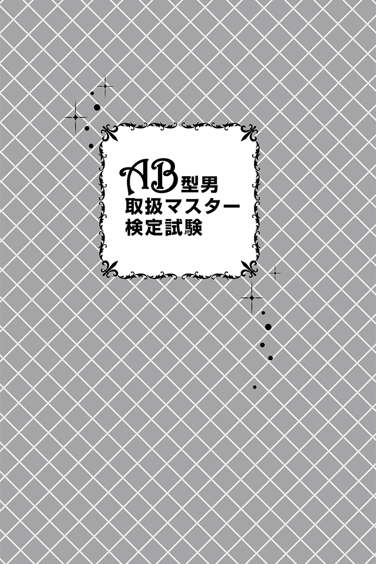
ＡＢ型男取扱マスター検定試験とは
本書では「ＡＢ型の男性をどう取り扱うとあなたも相手も幸せになれるのか」という永遠の研究テーマに基づいて解説してきました。
読み終えたあなたは、「ＡＢ型男取扱マスター」に、大きく近づくことができたはずです。
いかがでしょうか。
「ＡＢ型男取扱マスター」として、実際にどれくらいの力があなたについたかを確認するのが、この「ＡＢ型男取扱マスター検定試験」です。
ＡＢ型男の行動や考えを具体的に落とし込んだテストですので、ぜひ挑戦してください。
このテストは、あなたの日常に起こりやすいＡＢ型男と接する状況を想定し、日常生活、就職・仕事、お金、恋愛、ＳＥＸ、結婚、家族に分けて問題を作成していますから、実際に遭遇するシチュエーションと似ている部分が多々あるはず。
学んだことを実生活に生かせるよう、しっかりとＡＢ型男を理解していきましょう。
テストのやり方は簡単。すべて３択問題になっていますので、直感で答えていってください。
すべてを答え終わったら、解答を元に答え合わせを行ってください。
正解であれば、１問につき２ポイントが加算されます。
合計ポイントを算出したら、下の表で自分の実力ランクを判定します。
【１問正解で２ポイント：合計60 問】
２～30 ポイント 落第
32 ～70 ポイント Ａ型男取扱インターン生
72 ～１００ポイント Ａ型男取扱有資格者
１０２～１２０ポイント Ａ型男取扱マスター
「落第」の人は、ＡＢ型男がいったい何を思い、何を考えているのかが理解できないため、そばにいるだけでストレスを感じるでしょう。クールな表情で、本音もなかなか見せてくれないため、何をすればよいのか、してはいけないのか、「もうワケがわからない！」と声を荒げたくなったこともあるのでは。ＡＢ型男を理解するのは大変難しいですが、もともとやさしい性格なので、こちらから歩み寄ることで、ＡＢ型男も心を開き始めます。まずはＡＢ型男と一緒の時間を過ごし、馴染むことから始めてみましょう。楽しい時間を過ごそうとする姿勢が、距離を縮める最初の一歩です。
「ＡＢ型男取扱インターン生」の人は、ミステリアスなＡＢ型男の雰囲気に戸惑うことはあっても、「ちょっと変わってるけど、まあいっか」と適度な距離でうまく付き合えていることでしょう。ただそれでは、本当の信頼関係は築けません。大事なときにＡＢ型男と本音で話すことができないと、ちょっとしたことで関係はたやすく崩れてしまいます。まず彼らに興味を持つことです。ＡＢ型男は自分に関心を寄せてくれた相手とは友好的な関係を築こうとします。もう1 歩、深く彼らを知る努力から始めてみましょう。
「ＡＢ型男取扱有資格者」は、ＡＢ型男のことを十分に理解できている存在です。周囲に誤解を与えがちなＡＢ型男の言動を冷静に分析し、フォローできるため、彼らに頼りにされています。あなたが困ったときにも、積極的に助けてくれるでしょう。一緒に過ごした分だけ、ＡＢ型男も本音で語ってくれるようになるので、できるだけ多くの時間を過ごすよう心がけましょう。そのなかで、ＡＢ型男の隠れた魅力をさらに発見することができるはずです。
「ＡＢ型男取扱マスター」は、まさにＡＢ型男のスペシャリスト。本音がバレないように言葉を駆使するＡＢ型男の会話も、あなたからすれば単純明快でしょう。なかなか理解してもらえず孤独になりやすい彼らにとって、あなたは大切な存在。普段は他人からの批判や忠告をイヤがるＡＢ型男も、あなたの意見ならば、素直に耳を貸すはずです。妻、上司、恋人、どんな関係であっても、互いに幸せな日常を送ることができるでしょう。
もちろん、ひと口に「ＡＢ型男」といっても、皆が皆一緒、というわけではありません。
あなたの周りのＡＢ型男の反応と検定試験問題の解答が異なることもあります。その場合はもちろん、柔軟にとらえて本人の反応を受け止めてください。
なにせ、得意なポーカーフェイスで本性を見せないのがＡＢ型男ですからね。
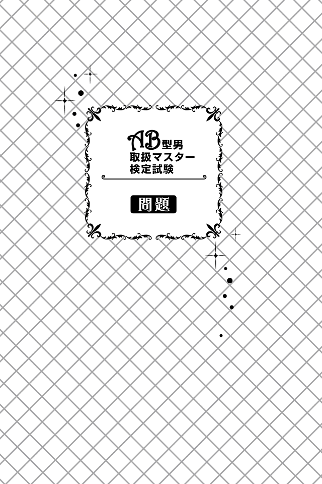
日常生活編
01 ＡＢ型男性・ＡＢ男さんは友人たちと地域で最も有名な神社へ初詣に出かけました。ところが、日も暮れ、気温も０度を下回っているというのに人混みが尋常ではありません。この様子だと、お参りするのに１時間以上は並びそうな気配。「おい、どうする？」「ほかの神社にするか？」と、友人がこの神社での初詣を提案したＡＢ男さんに聞いてきました。さて、ＡＢ男さんはどう答える？
Ａ：「ほかも混んでいるだろうし、もう少し頑張ろう」
Ｂ：「そうだな、ほかの神社にしよう」
Ｃ：「初詣は後日にして、まずは温かい場所で初飲みしよう」
02 友人に誘われ、初めて異業種交流会に参加したＡＢ男さん。来年から就職活動が始まるだけに、有益な場にしたいと思っているのですが、学生のＡＢ男さんにとって、社会人と接する機会なんてそうそうなく、実業家や起業家、一流企業の社員を前に大緊張。そんな状況下で、ＡＢ男さんがしでかしやすい失敗は次のうちどれでしょうか？
Ａ：意気込みすぎて、自分のことばかりしゃべってしまい、相手をあきれさせてしまう
Ｂ：緊張をほぐそうとお酒を飲んでいたら、酩酊してしまいつまみ出されてしまう
Ｃ：話しかけるきっかけを探しているうちに気づけば一人浮いてしまい、そのまま最後まで一人になってしまう
03 大学のゼミで研究発表をすることになり、リーダーを仰せつかったあなた。グループメンバーは、これまでほとんどしゃべったことがないＡＢ男さんを含め男女混合の４名。さっそく、どんな発表をするか打合せを始めたのですが、結論が出ず、議論はこう着状態に......。そんななか、ＡＢ男さんだけはずっと黙っています。グループのリーダーとして、あなたはＡＢ男さんに対し、どう接すべき？
Ａ：「言いたいことがあれば言うだろう」と、特に何もせず、ＡＢ男の出方を見る
Ｂ：「ところで、ＡＢ男さんはどう思うの？」と名指しで意見を求める
Ｃ：「意見を言わないのは、やる気がない証拠」と割り切り、ほかの３名のメンバーと準備を進める
04 ＡＢ男さんがフェイスブックを始めたと聞いて、さっそく友達としてつながったあなた。最初のうちは、適度に書き込んでいたＡＢ男さんですが、ここ数週間、書き込みがありません。学校で会うと変わらず元気なので、病気ということはなさそうです。悩んでいる様子も見受けられません。ＡＢ男さんがフェイスブックに書き込まなくなった理由は、次のうちどれと考えられる？
Ａ：ＳＮＳより現実のコミュニケーションを重視するようになった
Ｂ：最初は勢いで書き込んでいたが、不特定多数の人が閲覧することを考え、適切な使い方を模索している
Ｃ：現実とＳＮＳでのギャップを周囲に感じさせ「本当は悩んでいる自分」に気付いてほしがっている
05 飲み会後、すっかり酔ってしまったＡＢ男さんと幼馴染みのＭ男さんは同じ電車で帰ることに。終電１本前だけあって車内は超満員。運良く２人とも座れたのですが、５駅ほど過ぎたところで、Ｍ男さんが「やばい、吐くかも......。俺、次の駅で降りるわ」と言い出しました。Ｍ男さんの顔色は真っ白。降りて休んだほうがいいのは明白です。次の駅から２人が降りる駅までは、１時間ちょっと。終電まではあと20 分あるので、一休みしてから乗り込むことは十分可能ですが、間違いなく座ることはできません。さて、ＡＢ男さんはどうする？
Ａ：「わかった。気をつけて」と声をかけ、自分は降りずにＭ男さんを見送る
Ｂ：「わかった」と言って、Ｍ男さんと自分の荷物を持ち、次の駅で一緒に降りる
Ｃ：自分の荷物は席に置いたまま、Ｍ男さんの荷物を持ち、ドアの前に連れて行き、降りる手伝いをする
06 あなたとＡＢ男さんは、友人たちとマージャンをしています。もともとギャンブル好きで強いうえに、運も味方して、今日のＡＢ男さんは負け知らず。あなたも、友人２人も歯が立ちません。「このまま０勝で終わるのだけは阻止したい」と、さまざまな秘策を取ったところ、ようやく１勝できました。さて、その秘策とは次のうちどれ？
Ａ：「うまいなあ。ＡＢ男には絶対に勝てないな。ほんと、強いわ～」などと褒めたりおだてたりして、気をゆるませる
Ｂ：「マジで強すぎだよ。全敗なんてことになったら、もう二度とＡＢ男とマージャンするのはやめよう」などと愚痴っぽく言う
Ｃ：「今月、お金がピンチなんだ。ちょっとは手加減してくれよ」と懇願する
07 友人たちと登山をすることになったＡＢ男さん。明朝４時半に起きて出発しなければならないのですが、一向に寝付けません。登山は体力がすべてといっても過言ではないと重々承知しているのですが、眼はさえるばかり。時計を見ると既に３時をまわろうとしています。さて、ＡＢ男さんはどうする？
Ａ：寝るのをあきらめて、登山コースの確認をしたり、持ち物のチェックをしたりする
Ｂ：少しでも体を休めておいたほうがよいだろうと、ベッドに横になり目をつぶって朝まで過ごす
Ｃ：15 分間全力で筋トレをして体を疲れさせ、シャワーで汗を流して体を温めてベッドに入り、眠れる可能性をつくり出そうとする
08 携帯電話を買い替えることにしたＡＢ男さん。せっかくなので、携帯カバーも購入することに。大手電化製品店の携帯アクセサリーコーナーへ向かうと、遊び心があるものからシックなものまで50 種類は並んでいます。さて、ＡＢ男さんはどんな基準で選ぶ？
Ａ：店員に「あまり売れていないものは？」と尋ね、そのなかから自分の趣味に見合ったもの
Ｂ：そのお店でいちばん売れているもの
Ｃ：同僚が使っているのを見て、前々からかっこいいなと思っていたもの
09 今日はＡＢ男さんの誕生日。なんとなく浮き浮きした気分で学校に向かうと、「ＡＢ男、ちょっと相談があるんだ。今日、うちに来てくれないか？」と友人に声をかけられました。特に予定があるわけではなかったため、「ああ、いいよ」と答え、席に着いたＡＢ男さんでしたが、ふとあることに思い至りました。昨日、友人たちがこそこそ集まって話していたとき、「ＡＢ男が......」「明日のサプライズ......」といった言葉が聞こえてきたのを。すべての合点がいったＡＢ男はいったいどうする？
Ａ：友人たちにお礼の意味を込めて、逆ドッキリを仕掛けようとアイデアを練る
Ｂ：友人たちの気持ちを汲んで、最もいいリアクションは何か考える
Ｃ：「ひょっとして俺のサプライズ誕生日パーティー？」と友人に正直に聞いてみる
10 大事な友人と大ゲンカしてしまったあなた。なんとか仲直りしたい気持ちもあるのですが、顔を合わせてしまうと、言い合いになり、収拾がつかなくなりそうです。そこであなたは、２人のことをよく知っているＡＢ男さんに仲裁を頼むことにしました。さて、ＡＢ男さんはどう対応する？
Ａ：「ここは俺の顔を立てて、双方、怒りを鎮めて仲直りしてくれ」と任侠映画の手打ちシーンのような仲裁方法
Ｂ：「このケンカはお互いにとってまったくメリットがない。その理由は３つ。１つ目は......」などと論理的に過ちを指摘し、互いを納得させたうえで仲直りさせる方法
Ｃ：「お前の言うことも君の言うこともよくわかる。でも、このままお互いの関係を終わらせたいと考えているわけじゃないんだろ？ だったら、こんなムダな時間を過ごすのはやめようぜ」と理屈でまとめる方法
就職・仕事編
11 新入社員研修を終えたＡＢ男さんが営業部に配属されてきました。営業部長であるあなたは、彼の担当を決めなければなりません。営業とひと言で言っても、その仕事内容はさまざま。また、ＡＢ男さんの営業力の基礎をつくり上げるうえで大事な時期を過ごす場所です。さて、ＡＢ男さんを配属するうえで最適な部署はどこでしょう？
Ａ：新規の取引先をひたすら開拓する第一営業部
Ｂ：顧客の要望に合わせて商品・サービスの企画提案を行う第二営業部
Ｃ：ルートセールス中心の第三営業部
12 入社して１年が過ぎたＡＢ男さんが、仕事で大失敗してしまい、取引先から大クレームを受けました。上司のあなたがＡＢ男さんと一緒に謝罪へ出向き、なんとか許してもらうことができました。その帰り道、今回の失敗について話し合おうと喫茶店に立ち寄ると、席に着くなり「僕、この仕事向いていないと思います。部署異動をお願いします」とＡＢ男さん。すっかりヘコんでしまっているＡＢ男さんの自信を取り戻させるために、あなたがかけるべき言葉は次のうちどれ？
Ａ：「そんなことないぞ。とにかく頑張ろう」
Ｂ：「このくらいでへこたれてどうする！ 甘えるな 」
Ｃ：「ＡＢ男の本来の力が出せればうまくいくはずだ。お前はそれだけのものを持っている、そうだろう？」
13 どうやら風邪をこじらせてしまったＡＢ男さん。熱を測ると39 度超え。「まいったな、今日は取引先との打合せがあるのに......」。打合せは午後イチ、つまり13 時スタートで、簡単な確認だけなので１時間ほどで終わる予定です。また、ＡＢ男さんのほか、後輩社員も参加することになっています。さて、ＡＢ男さんはどう判断する？
Ａ：打合せは欠席できないので、ムリしてでも出勤する
Ｂ：打合せだけ参加し、あとは休みをとる
Ｃ：打合せは後輩に任せて、完全に休む
14 ＡＢ男さんが所属している部署が、売上の新記録を達成しました。「不景気のなか、君たちには本当に頭が下がる思いだ」と社長は大喜び。「なかでもＡＢ男くん。君の活躍はめざましいものがあった。君がいなければこの結果はなしえなかっただろう」と名指しで評価し、一言を求めてきました。さて、ＡＢ男さんはこのときどうリアクションをとる？
Ａ：「引き続き頑張ります。な、みんな」とリーダー然として振る舞う
Ｂ：「社長や部長、課長のご指導の賜物です」と上司をヨイショする
Ｃ：「ここにいる全員の努力の結果です。私は私がやるべきことをしたまでです」と部署全体の手柄にする
15 「部長、すみません。少しよろしいでしょうか」とＡＢ男さんに声をかけられ会議室に向かったあなた。「実は、Ｍ社に新製品を紹介したところ、担当者が『オモシロいね～。試してみようかな』とのことだったので、早速納品すると、あれはリップサービスで、実際は必要ないから返品すると連絡があった」とのこと。ＡＢ男さんは、Ｍ社の担当者の言い分に不満があるようですが、正式な注文書を待たずして納品した彼にも責任があります。入社して６年が経つＡＢ男さんは来春から主任に昇格予定です。さて、あなたはどう判断する？
Ａ：「お客様の手前、仕方がない」とＡＢ男の先輩社員をつけ、一連の対応を先輩の指示に従いながら行うよう指示する
Ｂ：「状況はわかった。ただ、Ｍ社は大事なお取引先だ。関係を壊すことなく、自分で片付けてこい」と指示する
Ｃ：ＡＢ男を担当から外し、部長であるあなたが自ら出向いて謝罪し、対応に当たる
16 新規プロジェクトを立ち上げることになったあなた。会社をあげての取り組みなだけに、また、今後のあなたの評価、会社員人生にも大きく影響するだけに、失敗は許されません。プロジェクトの責任者として、メンバー選考を任されたあなたはリーダーにＡＢ男さんを抜擢することに。さて、ＡＢ男さんのモチベーションを最も高められる誘い方はどんなもの？
Ａ：「任せられるのは君しかいない」とＡＢ男の実力を見込んでのことだと、多少誇張して伝える
Ｂ：「出世の大チャンスだぞ」とＡＢ男の出世欲を刺激する
Ｃ：「君にはより多くの報酬が保証されるぞ」と金銭的メリットをほのめかす
17 プロジェクトリーダーとなったＡＢ男さん。何もないところから立ち上げ、仕組みを整えるところまではうまく進めてこられたのですが、最近、ちょっと停滞気味の模様。相談も泣き言も言ってきませんが、そうとう本人は悩んでいるようです。優秀なＡＢ男さんの初めての困惑した状態に、上司であるあなたはどうするべき？
Ａ：ＡＢ男の能力を最後まで信じるが、本人の視野を広げるために１日休ませて緊張をとり、その間に縁の下の力持ちとしてできるサポートを済ませておく
Ｂ：ＡＢ男の後輩を事務などのサポート役に任命し、ＡＢ男の精神的負担を軽減しようと考える
Ｃ：細かく報告させるようにして、あなたがすべて対応を検討・指示し、ＡＢ男は実作業の担当者とする
18 新年度の辞令がそろそろ固まり始める時期、ＡＢ男さんの会社ではある噂がささやかれだしました。「来年度は部長が定年を迎えるから、Ｔ課長が部長に昇格するらしい。課長には、ＡＢ男かＭ男がなるらしい」。ＡＢ男さんと同期であるＭ男さんは自他ともに認めるライバル。常に比べられ続けた関係です。さて、このときのＡＢ男の気持ちは？
Ａ：「Ｍ男の下で働くくらいなら、会社を辞めてやる！」とライバル心を燃やす
Ｂ：「Ｍ男が課長になりたいなら、いいんじゃない。俺は別にどっちでもいいよ」と気にしない
Ｃ：「Ｍ男のほうが上役にふさわしい。俺はどうしてもあいつには敵わない」と悲観している
19 経営戦略室の課長になったＡＢ男さん主導のもと、会社創立30 周年を祝した新規プロジェクトが始動することになりました。来月の祝賀会ではその内容を発表することになり、ＡＢ男さんと公募で集まった５名のメンバーが活動開始早々、寝る間もないほどの忙しさに見舞われています。「こんなにきついとは思わなかったな......」とメンバーからも弱音が聞こえてきました。さて、ＡＢ男さんはどう応対する？
Ａ：「終わりは必ずくるんだから、それまでできることをやろう」と淡々と励ます
Ｂ：「バカ野郎！ 会社の30 周年に泥を塗る気か！ やる気がないならとっとと辞めちまえ！」とはっぱをかける
Ｃ：「これがうまくいったら、俺が皆にうまいもんごちそうしてやるよ」とご褒美で釣ろうとする
お金編
20 久しぶりに学生時代の友人と飲んだＡＢ男さんは、その友人が最近ハマッているものにすっかり驚いてしまいました。実は、新人アイドルグループにハマり、ライブや撮影会はもちろん、グッズの購入にも、そうとうなお金を注ぎ込んでいるというのです。「俺がＣＤを買うことで彼女に少しでもお金が入るなら、何枚だって買うさ！」。しかも、奥さんには内緒だといいます。さて、ＡＢ男さんはこの友人になんと声をかける？
Ａ：本人が好きでやっているのだから、何も言わない
Ｂ：「そのお金を投資に回して、稼ぎを使えば、生活を逼迫しないよ」と人生を踏み外さないよう注意を促す
Ｃ：「バレたら、離婚になりかねないぞ」とＣＤやグッズを売り払い、少しでもお金を取り戻すよう説得する
21 母校の大学の近くを通りかかったＡＢ男さんは、懐かしさに誘われ、帰る道すがら大学校舎をのぞいてみることに。すると、偶然ゼミの後輩たちとバッタリ。そこで、久しぶりに後輩たちを引き連れて飲みに行くことにしました。後輩は男女合わせて６名です。さて、ＡＢ男さんはどう支払う？
Ａ：後輩とはいえ、きっちりワリカンで支払う
Ｂ：会計金額の半分を自分で出し、残りは後輩の人数で割る
Ｃ：すべてオゴる
22 あなたは証券会社の営業担当者です。学生時代の友人であるＡＢ男さんが、最近財テクに興味を持っているらしいと聞きつけ、営業に出かけました。ＡＢ男さんは投資に興味があるようで手ごたえは十分。商品さえ見合えば、顧客になってくれそうです。さて、どんな投資商品を勧めるべき？
Ａ：ハイリスクハイリターンの商品
Ｂ：リスクが少なく、変動率の小さい長年かけて利益を出していく商品
Ｃ：リスク分散のためＡとＢを組み合わせた商品
23 自宅から車で30 分ほどのショッピングモールへ出かけたＡＢ男さん。「これはお買い得だ」とマフラーを購入しましたが、自宅で取り出してみてビックリ！ 首に巻いてみると目立つところにほつれがあったのです。取り除こうとしたところ、ほつれが広がってしまいました。さて、ＡＢ男さんはどうする？
Ａ：レシートと商品をお店に持っていき、交換や返品が可能か確認する
Ｂ：お店に行くのが面倒なので、あきらめてゴミ箱に捨てる
Ｃ：多少、不恰好にはなるが自分で修繕して使ってみる
24 ＡＢ男さんが親友から相談を受け、悩んでいます。というのも、お金を貸してほしいというものだったからです。ちょっとしたトラブルが起きてしまい、まとまったお金が必要とのこと。友人数人に少しずつ借りることを考えているようで、ＡＢ男さんが依頼された金額は２万円。決して大きい額ではありません。さて、ＡＢ男さんはどうする？
Ａ：きちんと借用書をつくり、返済期日を明記してから貸す
Ｂ：低金利だが利息を取ることを約束して貸す
Ｃ：返済期日などの制限は何も設けず、親友を信用して貸す
25 ＡＢ男さんと買い物に出かけたところ、ＡＢ男さんがある高級ボールペンに一目惚れしてしまいました。職人がすべて手づくりした一本もので、価格はなんと５万円。今年はボーナスカットもあったと聞いたうえに、いくらなんでも衝動買いには高すぎると思ったあなたは、「もう少しよく考えたら？」とアドバイスしましたが、ＡＢ男さんの耳には届きません。さて、あなたはどうする？
Ａ：ＡＢ男の好きなようにさせる
Ｂ：「とりあえず一日考えよう」と今すぐの購入を止める
Ｃ：「落としたり、紛失したりしたらどうするんだ？」とリスクを考えさせ、あきらめさせる
26 休日のある日、あなたは同僚のＡＢ男さんと近所で会いました。いつもは冷静で寡黙なＡＢ男さんですが、今日は珍しく興奮しています。話を聞くと、なんと宝くじで50 万円を当てたとのこと。酔った勢いでたまたま買った一枚が当たったそうです。独身で彼女もいないＡＢ男さんが最もお金を使いやすいパターンは次のうちどれでしょうか？
Ａ：海外旅行に出かけて一気に使ってしまう
Ｂ：全額貯金にまわす
Ｃ：自分がコレクションしているものに全額注ぎ込む
27 同僚に連れられキャバクラデビューしたＡＢ男さんは一人のキャストをすっかり気に入ってしまった様子。「話も合うし、なんだかとてもいい感じだな」とご満悦、店を出た後も「あの子がいるならば、また来てもいいかな」と話しているほどです。さて、ＡＢ男さんはどのような客になりやすい？
Ａ：「仕事が忙しいから」と理由をつけて頻繁には遊びに行かないが、一度で大金を使う客
Ｂ：一度で大金は使わないが、週に５回は通う常連客
Ｃ：キャストからの営業電話やメールでお願いされると必ず顔を出し、同伴依頼も断らない律義な客
28 会社の同僚と食事に出かけたＡＢ男さん。お酒も会話も進み、楽しい食事会になりました。ところが、支払いになって財布を開くと、１０００円しか入っていません。仕事が多忙過ぎて、うっかりお金をおろすのを忘れていたのです。支払いは１人５０００円。近くのコンビニＡＴＭまでは10 分ほどの距離があります。さて、ＡＢ男さんはどうする？
Ａ：急用が入ったフリをして、幹事に「すまない、明日払うから」と言い残して、店を出て、その日は帰宅する
Ｂ：「ちょっと待ってて」と言い残し、近くのコンビニでおろして戻り、その場で必ず支払う
Ｃ：メンバーの誰かにお金を借り、その場はうまく収める
29 ある朝、直属の上司である経営戦略室・室長に呼ばれ、ＡＢ男さんが会議室に向かうと、室長のほか社長や役員が勢ぞろい。突然のことに、さすがのＡＢ男さんも動揺していると、室長から「低迷しているわが社の利益確保のため、何かいい案を出せ」と言われました。たしかにここ数年、主力商品の売上も横ばいで、何か打開策を講じないと、赤字に転じる可能性があります。さて、任命を受けたＡＢ男さんはどうする？
Ａ：不採算路線の商品を洗い出すため、データ分析をする
Ｂ：マイナス分を補えるような、新商品の企画提案をする
Ｃ：社員の営業力と既存商品の販売ルートを見直そうとする
恋愛編
30 ホームパーティーを開催することにした友人とあなた。参加者は全員、独身＆彼氏彼女のいないフリーの人たちなので、恋が生まれる予感も。パーティー当日、会場でＡＢ男さんと出会ったあなたは、何か惹かれるものを感じ、どうにかしてＡＢ男さんと仲良くなりたいと考えました。パーティーがお開きになるまであと２時間弱、距離を縮めるための効果的な方法とは？
Ａ：とにかくノリ重視！ しゃべって笑って場を盛り上げて、楽しくて元気な女性をアピール
Ｂ：ＡＢ男の話を聞き、意図を汲みながら、自分も適度に話し、会話を楽しむことができる知的な女性をアピール
Ｃ：参加者それぞれを褒めて持ち上げ、みんなが気持ちよく過ごせる雰囲気をつくり、気が利く女性をアピール
31 パーティーの２日後の朝、ＡＢ男さんからデートのお誘いメールがきました。悪くないなと思いつつも、がっついていると思われたくないので、この返信はなかなか大事なところです。さて、どのタイミングで、どういった内容で返信すると、あなたは好印象を与えられるでしょうか？
Ａ：午前中に「すでに予定があるので、調整してから連絡します」と返し、その日の夜に「予定が空けられました！楽しみにしてますね」と追加で返信する
Ｂ：一晩おいて翌朝「いいですよ」とあっさり返信する
Ｃ：30 分後に「もちろん、喜んで」と返信する
32 ＡＢ男さんと初デートの約束をしたあなた。「どこに行くのかな？」と期待していたところ、ＡＢ男さんから「どこか行きたいところはある？」とメールが。ここで距離が縮められれば、交際に発展しそうです。デートにはどこを選ぶべき？
Ａ：のんびりと会話を楽しめそうな森林が広がる公園
Ｂ：血がたぎるほどの応援で盛り上がれるスポーツ観戦
Ｃ：知的好奇心をくすぐられる美術館や博物館
33 ＡＢ男さんと食事中のあなた。博識で会話の引き出しが多いＡＢ男さんの話につい聴き惚れてしまうため、あなた自身はほとんど話せていません。「私も何か話さないとバランスが悪いかな？」と突然心配になったあなた。さて、どうする？
Ａ：彼と同じ割合になるよう、自分の話をどんどん始める
Ｂ：彼との会話を楽しむことに終始し、無理やり入り込まない
Ｃ：彼の話を遮ることになっても、自分の話をすぐに始める
34 あなたの女友達数人がＡＢ男さんに会ってみたいと言い出しました。ＡＢ男さんは「君が言うなら......」と納得してくれました。友達は、まだ見ぬＡＢ男さんに興味津々。いろいろと聞きたいこともあるようです。ＡＢ男さんを彼女たちに引き合わせるうえであなたが気をつけるべきことは？
Ａ：ＡＢ男がダンマリを決め込んでしまうこと
Ｂ：ＡＢ男がオヤジギャグを連発して場の空気を凍らすこと
Ｃ：ＡＢ男と彼女たちとの会話がかみ合わないこと
35 仕事を終え、更衣室で着替えていたあなたは、突然隣りにいた先輩から「あなたは、どっち派なの？」と厳しい表情で質問されました。どうやら、水面下にあった女性社員の派閥争いが表面化してしまったよう。「すみません。予定があるので、お先に失礼します」と逃げ出したものの、明日以降のことを考えると憂鬱です。会社後にデートをしていたＡＢ男さんからは「元気がない」と心配される始末。楽しく過ごしたいのは山々ですが、頭から離れないのも事実、さて、どうすべき？
Ａ：仕方がないので率直に相談してＡＢ男の意見を聞く
Ｂ：「なんでもないよ、気のせいだよ」と気丈に振る舞い、デートを楽しむ
Ｃ：「体調が悪いから今日のデートはキャンセルさせて」とお願いし、日を改めて楽しい時間を過ごそうとする
36 デート中、ＡＢ男さんが気になるジャケットを見つけ、「試着したい」と言い出しました。ところが、店内を見渡すとＡＢ男さんが試着するジャケットより、もっとオシャレなものが数多く並んでいます。さて、あなたはＡＢ男さんにどう振る舞いますか？
Ａ：ＡＢ男にいろいろなジャケットを着比べさせて、ほかのジャケットを買うよう誘導する
Ｂ：「こっちのほうが絶対いいよ」と、あなたがいちばん気に入ったジャケットをオススメする
Ｃ：ＡＢ男が気に入ったものを尊重して、「それがいちばん似合うし、気にいったならそれがいい」と褒めてあげる
37 ＡＢ男さんと付き合い始めて半年が過ぎました。お互いに仕事が忙しく、メールのやり取りはあるものの、会えない日々が続いています。この状態になってそろそろ１カ月。さすがにこのままではよくないと、あなたはなんとかして２人の時間をつくろうと考えました。このとき、ＡＢ男さんに対してやってはいけないことは、次のうちどれ？
Ａ：ＡＢ男に仕事のスケジュールをこと細かく報告させる
Ｂ：ＡＢ男へのメールや電話の回数を増やす
Ｃ：ＡＢ男に自分のスケジュールを教え、タイミングを見計らって電話を掛けてもらう
38 「久しぶり～！ 元気だった？」。ＡＢ男さんとデート中、あなたの携帯に元カレから電話が。知らない番号だったため、つい出てしまったあなたは突然のことに困惑気味。早々に電話を切り上げたものの、その様子を見ていたＡＢ男さんは何やら不機嫌な表情です。元カレとバレてはいませんが、さて、機嫌を直してもらうために、あなたはどう対応するべき？
Ａ：「別にやましいことはないからね。じゃあ、行こっか」と詳しい説明はしない
Ｂ：「びっくり！ 元カレだった。番号知らなかったから出ちゃってごめんね」と素直に事情を話して謝る
Ｃ：「学生時代の友達だった。同じサークルの娘でさ」と、相手が元カレだったことがバレないよう、嘘をつく
39 「どうしても価値観が合わない......」。あなたはＡＢ男さんと別れる決意をしました。おそらく彼はそんなこと、つゆほども思っていないでしょう。そんな彼と、どうすればスムーズに別れることができるでしょうか？
Ａ：「あんたなんか大嫌い＊＊＊ 二度とその顔を見せないで！」と一方的に別れを告げる
Ｂ：「いったん離れてみない？ いろいろ考えたいの」と胸の内を明かして円満な別れを試みる
Ｃ：「もう別れましょう」とだけ告げ、以降は着信があっても、一切連絡せず、音信不通にする
ＳＥＸ編
40 あなたとＡＢ男さんが付き合うことになってから３日目。あなたの家でデートをしているうちに、だんだんといい雰囲気になってきました。ＡＢ男さんとこのままラブラブに過ごしたい気持ちはありますが、交際３日目で簡単に体を許す女だと思われたくないので、ここは心を鬼にして断りたいところ。ただＡＢ男さんの心が離れるのも避けたいあなたは、どう対応すべきでしょう？
Ａ：「３日目でエッチはちょっと......」とＡＢ男の誘いを断る
Ｂ：「今日はそんな気分ではない」と断る
Ｃ：「男の人は体が目当てだってよく言うけど、ＡＢ男さんもなの？」と聞いてみる
41 無事に初めてのエッチを終えたあなたとＡＢ男さん。照れと緊張で少しぎこちなさがあったものの、お互いに嬉しさもあり、満足しています。ただ、あなたは不安に思うことが......。「エッチした途端に態度を変える男の人って多いからなあ」。さて、ＡＢ男さんはどういう態度をとる？
Ａ：とことんあなたを労わってくれる
Ｂ：エッチする前と変わらずクール
Ｃ：あなたに声をかけることもせず、眠そうにしている
42 「彼の本当の姿がわからない......」。あなたは今日一日ずっと悩んでいます。昨夜のＡＢ男さんとのデートでとても気になることがあったためです。これまで、何度かベッドを共にしてきましたが、ＡＢ男さんはいつも淡々と真摯な目でエッチをします。ところが、昨日のＡＢ男さんはというと、遊び人のような、ゲーム感覚でエッチを楽しんでいるような雰囲気だったのです。「浮気しているのか、それとも結構遊んでいるのか......」。さて、ＡＢ男さんが豹変した理由は次のうちどれ？
Ａ：エッチで仕事のストレスを発散させようとした
Ｂ：いつもとは違うプレイであなたを喜ばせようとチャレンジしてみた
Ｃ：ゲーム感覚のほうがＡＢ男の本来のしかた
43 ＡＢ男さんと交際を始めて１年。最近、あなたはＡＢ男さんとのエッチの回数が微妙に減ってきたように思っています。「私に飽きたのかな？」「浮気でもしているのかな？」。さまざまな不安があなたの胸の中をよぎります。普段のデートでは変わった様子はなく、むしろ二人の距離が縮まっているとさえ感じているほど。さて、ＡＢ男さんにいったいどのような心境の変化が起きているのでしょうか？
Ａ：心のつながりがしっかりしているので、ムリにエッチをしなくてもよいと思っている
Ｂ：これまでエッチをたくさんしてきたので、性欲の対象ではなくなっている
Ｃ：実はセフレがいて、あなたを求めなくなっている
結婚編
44 交際から３年が経ち、結婚の話をするようになってきたあなたとＡＢ男さん。いろいろありましたが、結婚するならＡＢ男さんかなあと、あなたも考えています。そんなある日、「明日、会えるかな？ 大事な話があるんだ」とＡＢ男さんから食事のお誘いが。これはもう、結婚の話でしょう。さて、ＡＢ男さんはどんなプロポーズをしてくる？
Ａ：「そろそろいいでしょ。君と結婚生活をできるのは僕以外いなさそうだから」とシニカルなプロポーズ
Ｂ：「君のために生きる覚悟を決めたんだ。僕はたとえ死んでもこの愛を永遠に......」とシェイクスピア劇に出てくるようなキメキメで恥ずかしいセリフを使ってプロポーズ
Ｃ：「3 年も付き合ってきたことだし、俺と結婚しない？」という軽いノリのプロポーズ
45 結婚することになったあなたとＡＢ男さん。生活を始めるにあたって、共働きのお金をどう管理していくか、生活費はどのように出しあうか、金銭面について話し合うことになりました。ＡＢ男さんが考えるお金の扱い方は次のうちどれ？
Ａ：基本的には妻（あなた）に管理してほしい
Ｂ：ＡＢ男と妻（あなた)、それぞれが稼いだお金から生活費を出し合って、残ったお金は自由に使う
Ｃ：基本的には自分が管理し、妻（あなた）に小遣いを渡す
46 週末、夫婦でデパートのバーゲンセールへ。なかなか気に入るアイテムが見つからず、気づけば3 時間が経過。ＡＢ男さんもめっきり口数が少なくなっています。「俺のことは気にしないで。気に入ったものを買わないと後悔するよ」とは言うものの、ややお疲れの様子。さて、あなたはどうすべき？
Ａ：言葉に甘えてお気に入りのアイテムが見つかるまで探す
Ｂ：今までの候補のなかから妥協して購入する
Ｃ：「これ以上は限界だな」と察して買い物を切り上げる
47 最近、ＡＢ男さんの帰宅が遅く、あなたは浮気を心配するようになりました。出張も多くなり、携帯電話に連絡が入ったら、廊下や自室で話す始末です。不安とイライラが募るなか、浮気の可能性が生じた場合、あなたはどうするべきか？
Ａ：ＡＢ男がいないときにこっそりと携帯電話を確認する
Ｂ：「本当に出張？ 浮気じゃないの？」と直球で聞く
Ｃ：浮気をしたところで結局自分のところに戻ってくるので、バレないようにして墓場まで持っていくならよしとする
48 「せっかく休みが合うんだから、久しぶりにどこか一緒に行こうか？」。最近、忙しかった２人は明日は久しぶりに揃ってお休み。恋人時代に戻ったかのようにリフレッシュしたいところ。さて、次のうち、あなたがやってはいけないデートはどれ？
Ａ：行き先はＡＢ男に任せて、買い物や食事を楽しむデート
Ｂ：あなたが行きたい場所を選んで、自分の好奇心を満たせるようなデート
Ｃ：遊園地や水族館など定番の場所でのデート
49 ＡＢ男さんと結婚してからもうすぐ５年。最近、あなたには思い悩んでいることが。「ＡＢ男さん、私の身の回りで起きていることを全然尋ねないな」。仕事のこと、女友達との付き合いなど、とにかくあなたのこと、あなたの周りであったことについて聞かないのです。「私にあまり興味がなくなっちゃったのかな？」としか思えないのですが、ＡＢ男さんの真実は次のうちどれ？
Ａ：気になる女性がいて、ここのところ夢中になっている
Ｂ：釣った魚（女性）にはエサを与えなくなっている
Ｃ：そもそもプライベートを干渉したがる性格ではない
50 あなたとＡＢ男さんは、買い物帰りにＫさん夫妻とバッタリ。ＫさんはＡＢ男さんの同僚であり、よきライバル。「同じ部署のツートップとして互いに切磋琢磨しているんだ」とあなたも聞いたことがあります。「せっかくだから食事でも一緒にしないか？ ちょうど例のプロジェクトの件で話したいこともあったし」とＫさんが食事に誘ってくれたのですが、「ありがたいが、今回は遠慮するよ。まだ買い物の途中なんだ」とＡＢ男さんが断ってしまいました。すでに買い物は終えていたにもかかわらずです。さて、ＡＢ男さんはなぜ誘いを断ったのでしょうか？
Ａ：あなたが余計なことをしゃべるのではないかと恐れた
Ｂ：オフの日に仕事の話をしたくなかった
Ｃ：実はＫさんのことが嫌いで家族ぐるみの付き合いをしたくなかった
51 週末、マンションの管理組合の集まりが開かれることになりました。普段は奥さんが参加しているのですが、今回は「仕事で重要な会議がある」とのこと。なんとなく怪しい気もしましたが、ＡＢ男さんが参加してきました。そして、数日後、ＡＢ男さんはＳＮＳ上で、会議があったという日に奥さんと友達が楽しむ旅行の写真を発見しました。「やっぱりな」。さて、ＡＢ男さんはこのことをどう処理する？
Ａ：見て見ぬふりをするが、自分も同じことをしたときの保険として証拠だけは手元に置いておく
Ｂ：奥さんにこのことを伝え、謝らせる
Ｃ：ＳＮＳ上に「旅行楽しそうだね」とコメントをつけ、家では何も言わない
52 あなたとＡＢ男さんの間にめでたく第一子が生まれることに。ＡＢ男さんと名前を考えているのですが、周囲からも期待とともに、さまざまな候補が寄せられてきます。その中から迷い悩みながら５つくらいまで絞り、後はＡＢ男さんに一任することにしました。さて、どんな名前になりそうでしょうか？
Ａ：ほかの子どもと被らないような個性的な名前
Ｂ：著名人や有名人を彷彿させる名前
Ｃ：親の名前から一字引き継がせる名前
家族編
53 ＡＢ男さんとあなたの間に生まれた長男・ＡＢ太（ＡＢ型) くんはもうすぐ１歳になろうとしています。また、間もなく第二子も生まれる予定です。これから２人の子どもを育てる親として、どうあればいいか。日々、模索しているあなたに対し、ＡＢ男さんはどんな父親になりそう？
Ａ：あなたにも子どもたちにも対等に接する友達感覚の父親
Ｂ：仕事に実直に取り組み、家でも威厳がある父親
Ｃ：休日には必ず家族でどこかへ出かける家族サービス第一の父親
54 ＡＢ太くんの妹・ＡＢ美ちゃん（ＡＢ型女) が生まれました。最近、ＡＢ太くんがやたらと明るくなったことに気づいたあなた。「妹ができたのがうれしいのかな？」と思っていたのですが、どうもＡＢ男さんは違う見方をしている様子。さて、ＡＢ男さんはＡＢ太くんの内面をどう見ている？
Ａ：妹の魅力に負けないために、自分の明るさをパパとママにアピールしている
Ｂ：パパとママにもっとかまってほしいために、明るく振る舞って気を引こうとしている
Ｃ：単純に手下となる妹ができたことを喜んでいる
55 ＡＢ太くんも７歳になり、やんちゃ盛りに。部屋中を散らかしたり暴れたりと、まるで小さな怪獣です。ある日、和室でＡＢ太くんがドッタンバッタン暴れ始めたので、「ＡＢ太、和室で暴れたら障子が破れちゃうでしょ！ この部屋でドタバタしないで」と、あなたは母親として注意しました。ところがＡＢ太くんはちっとも言うことを聞きません。ちょうどそこにＡＢ男さんが帰ってきました。「ちょっと、アナタ。何とか言って」と、あなたに頼まれたＡＢ男さん。はたしてどうする？
Ａ：息子を呼び寄せ、厳しく叱りつける
Ｂ：「いやいや、途中で投げるなよ。あいつのためにも最後までやるべきだ」と、あなたに叱らせようとする
Ｃ：「わかった」と言ってＡＢ太くんの元へ行ったものの、うっかり遊び相手になってしまい、ミイラとりがミイラになる
56 友人の結婚式に出席するため田舎へ帰ることにしたあなた。新幹線で３時間ほどということもあり、出産以後、ほとんど帰っていないので「少し羽を伸ばしてこようかな」と、ＡＢ太くんとＡＢ美ちゃんを連れて約１週間、実家に連泊することにしました。さて、この間にＡＢ男さんの生活で気をつけなくてはいけないことは？
Ａ：これ幸いと浮気に走ること
Ｂ：カップラーメンばかりを食べる食生活の乱れ
Ｃ：友人たちと飲み歩いて散財してしまう
57 夏休みを利用して、ニューヨークへ旅行することになったＡＢ男さん一家。「子どものためにもこういう経験は積ませておいたほうがいい」と最もらしく語るＡＢ男さんですが、実際は、ＡＢ男さんが行きたがっていることは、奥さんであるあなたは重々承知しています。それだけに、彼の行きたいところもしっかり回りたいと考えています。さて、ＡＢ男さんが行きたがっているニューヨークの名所はどこ？
Ａ：世界経済の中心を肌で感じたいのでニューヨーク証券取引所
Ｂ：世界を揺るがせた歴史を確認できるグラウンドゼロ
Ｃ：やっぱり一緒に写真を撮りたい自由の女神像
58 今年のクリスマスは祝日。というわけで、家族でパーティーをすることにしたＡＢ男さん一家。ＡＢ太くん（７歳）もＡＢ美ちゃん（５歳）も大喜びです。ＡＢ美ちゃんはうれしそうにＡＢ男さんに言いました。「パパ、ＡＢ美ね、サンタさんにお人形セットが欲しいってお手紙書いたの」。するとＡＢ太くんが、「サンタクロースなんていないんだぞ。プレゼントだって、パパとママが買ってくるんだからな」と余計な一言。「いるもん！ サンタさんはいるもん！ パパ、サンタさんいるよね？」。ＡＢ美ちゃんの目に涙が溜まっています。さて、ＡＢ男さんはＡＢ美ちゃんにどう説明する？
Ａ：ＡＢ太を別室に連れて行き「とりあえず『いる』と言っておきなさい」と口裏を合わせるように言う
Ｂ：ＡＢ美に「サンタさんはいるよ。信じている人のところにだけきてくれるんだよ。もしかしたら、お兄ちゃんのところにはきてくれないかもな」とそれとなく、ＡＢ太に反省を促す
Ｃ：ＡＢ美に「う～ん。サンタさんはいないんだ。ＡＢ美も会ったことはないだろう？」と極めて現実的に話す
59 中学生になったＡＢ太くん。最近はクラスの大半が携帯電話を持っているようで、彼も欲しがるようになりました。しかし、あなたは大反対。「携帯電話なんて持ったら勉強しなくなるし、変なサイトにアクセスして、犯罪にでも巻き込まれたら危ないわ」。しかしＡＢ太くんも負けません。「自分だけ持っていないと、仲間外れになるよ」。困ったあなたはＡＢ男さんに相談しました。さてＡＢ男さんはどう考える？
Ａ：禁止事項を明記した「契約書」を作成し、ルール違反をしたらすぐに没収することを約束させてから携帯電話を持たせる
Ｂ：「危ないからダメ」とＡＢ太の求めを一蹴する
Ｃ：「いいじゃないか。そこまで言うなら持たせたら」と深く考えない
60 この春からＡＢ美ちゃんが社会人に。すでにＡＢ太くんは外資系企業に就職して海外暮らし、ＡＢ美ちゃんも就職先が他県になるため一人暮らしをすることになり、今日出発していきました。ＡＢ美ちゃんを空港まで見送ったＡＢ男さんとあなた。家に戻ると、やはり寂しさが込み上げてきました。「ついこないだまで賑やかだったのにね......」「そうだな、２人きりになってしまったな」。このとき、ＡＢ男さんはどんなことを考えているでしょうか？
Ａ：「ペットを飼うか」と寂しさを埋める方法を考えている
Ｂ：「新婚時代に戻ったみたいだな」と、妻とラブラブになれるような暮らし方を画策している
Ｃ：「静かなのもいいもんだ。ゆっくり趣味をやる時間でもとるか」と子どもたちの旅立ちをさほど意識していない
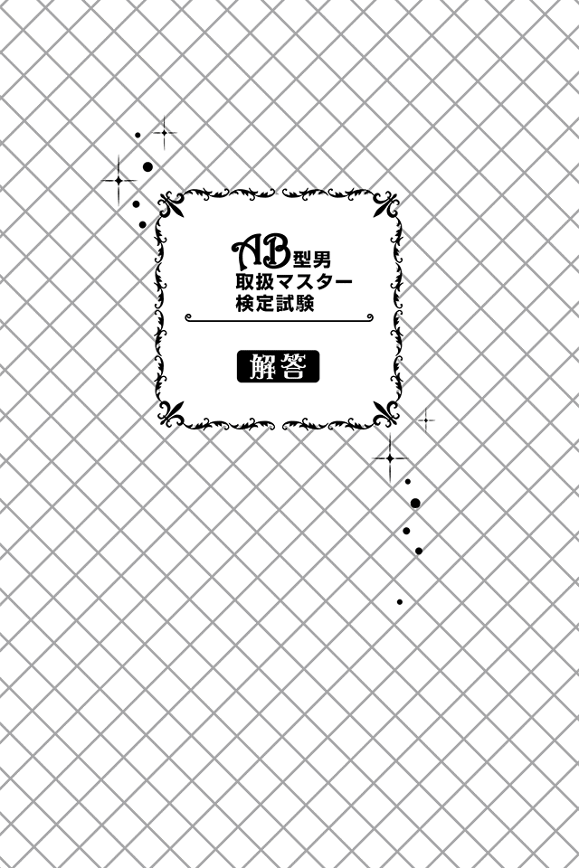
日常生活編
01 正解Ａ
ＡＢ型男は、周りの評価をとても気にするため、友人たちの意見に反対することはほぼありません。ただし、頭がよく合理的な考え方をするので、友人たちの考えをそのまま受け入れることはせず、よりよい結論を導き出してから答えを出します。また、こんな性格なので自ら提案をすることはめったにありません。神社を提案したというのは、よほど興味があったのだと考えられます。したがって、場当たり的に動くＢや誰からも希望が出ていないＣは不正解となります。
02 正解Ｃ
常にクールなＡＢ型男だけに、緊張はしても、会場の雰囲気にのまれたり、自分を見失ったりすることはありません。よって、Ａ、Ｂが不正解。ＡＢ型男は何事もソツなくこなすことができるのですが、失敗を恐れるあまり、自分から話しかけるのが苦手。多くの人が集まる場では、機を逸してしまうと何もできず、最後まで一人......なんてことも、実は少なくありません。そんなＡＢ型男に気づいたときは、会話に入れてあげましょう。
03 正解Ｂ
ＡＢ型男は自分の意見をあまり言いたがりません。それは、意見がないからでも、相手の話を聞いていないからでも、ましてやる気がないからでもありません。意見を言うことで、人から嫌われるのが怖いから控えているだけ。もともと頭がよく、人一倍物事を考えるので、意見を求めるとグッドアイデアを出してくれます。したがって、Ｂが正解。ただし、ＡＢ型男は相手のことを考えた発言ができないため、ストレートすぎる物言いに、周囲が傷つけられることもしばしば。言葉尻に踊らされることなく、真意を聞きとるようにしましょう。
04 正解Ｂ
本音を隠そうとするＡＢ型男は、現実でもＳＮＳでも自分の声( 本音) を出すことに躊躇します。よってＡは不正解。またＣのような遠回しなアプローチをする面倒くささもありません。ＡＢ型男はつながっている人との関係や影響をよく考えて書き込むので、比較的、慎重に投稿するようになります。書き込みが不定期の場合は、よりメリットのある使い方を考えていると見て問題ないでしょう。
05 正解Ｂ
大事な人には献身的に尽くすのがＡＢ型男のモットー。クールな表情の裏側には、「好きな人だからこそ嫌われたくない」という健気な気持ちが隠れています。したがって終電などのやむを得ない場合をのぞき、自分の時間に余裕がある状態ならば、「見捨てた」と受け取られる可能性もあるＡは選ばないでしょう。また、車内の人から「一緒にいるのに介抱もしないのか？」と冷たい目線で悪者のように思われたくない気持ちもあるため、Ｃも不正解。
06 正解Ｂ
ＡＢ型男は、もともと頭の回転が速く、勝負ごとが好きなので、まさに「ギャンブルの神の申し子」と言ってもいいほど。そんなＡＢ型男に運までも味方したのであれば、ハッキリ言ってテクニックで勝つのはムリです。ＡＢ型男のメンタル面のウイークポイントを狙うしかありません。ＡＢ型男の弱点は人間関係。好きな人との関係が崩れることを極端に恐れているので、その可能性を匂わすだけでも動揺し、ペースを崩します。マージャンは、メンタルが大きく影響するものなので、勝機を見出すのは、Ｂの策しかないでしょう。
07 正解Ｂ
ＡＢ型男が、パニックになることはほぼありません。問題に直面したときは、複数の選択肢のなかからベストな答えを冷静に導き出します。今回の場合は、少しでも体に負担がかからないよう、睡眠は欠かせないと判断します。したがって、Ａは× 。Ｃは一見合理的に見えなくもないですが、登山という状況を考えると、体力的にリスクがあることはしないでしょう。「眠れるかわからない」というグレーな状況はＡＢ型男の合理性に反するかもしれませんが、医学的にも認められている方法（眠らなくても横になるだけで体力温存が可能）を考えてＢの選択になりそうです。
08 正解Ａ
ＡＢ型男は人と同じものを好みません。できるだけ、個性を出せるものを使ったり、身につけたりします。したがって、Ｂのような大半の人が使っているものや、身近な人が使っているＣは不正解。奇抜なデザインを選ぶことはなく、少し人とは違うセンスを楽しみたいという発想で選ぶでしょう。
09 正解Ｂ
ＡＢ型男は、基本的に愛想がいいタイプなので、友人たちの気持ちを無下にすることはありえません。ドッキリを知ってしまったとはいえ、あくまで自然体で臨みます。しかし、ありきたりの反応では物足りない、せっかくなら、みんなの意表を突くようなリアクションをとりたい。愛には愛を返すＡＢ型男はこう考えます。したがって、正解はＢ。友人たちの気持ちを害したり、空気を壊したりしてしまう可能性があるＡ、Ｃは、むしろ避けるでしょう。
10 正解Ｃ
ＡＢ型男は冷静沈着なうえに、客観的に物事を俯瞰できるため、まず当事者２人に「何がいちばん大事なのか」と大局を見せ、その後、「ケンカ自体がバカバカしいことだ」と本題を取り上げるアプローチをするでしょう。ケンカの張本人たちでさえも「なるほど」と思う、見事なさばき方です。ちなみに、Ａのような親分気質全開の解決方法は主にＯ型男、Ｂのような論理的に仲直りすべき理由を語り双方に反省を促すのはＡ型男の得意とするところでしょう。
就職・仕事編
11 正解Ｂ
どんな人ともソツなくやりとりできるＡＢ型男は、営業職向きといえます。なので、どの部署でもそこそここなせますが、Ｂのような企画提案は、ＡＢ型男が得意とするところ。もともと頭がよく発想力があるうえに、「ほかと一緒はつまらない」をポリシーとしているＡＢ型男だからこその独自性で、顧客からの要望をこれまでなかった方法で実現していくでしょう。よって、最適という意味で正解はＢ。ただしＡＢ型男は、相手に合わせるのが上手でも、必ずしも相手の心情を推し量っているとは限らないので、取引先の要望はすべて聞き出すよう、徹底して教えることが必要です。
12 正解Ｃ
ＡＢ型男は愛されたい願望が強い生き物。適度に褒めたり、励ましたりすることが成長の糧になります。励ますという点ではＡも該当しますが、根拠が説明されていないだけにその効果は低いです。Ｃのような「ＡＢ型男の実力を認めている」とあなたなりの根拠を具体的に説明したほうが、ＡＢ型男の自信回復にも効果的でしょう。
13 正解Ｂ
ＡＢ型男は人に弱みを見せることをよしとしません。したがって、Ｃは不正解。さらに、体調を悪化させる可能性が高いＡも、より多くの人に迷惑をかけてしまう可能性があるため、選択することはありえません。大事なポイントだけはしっかりと顔を出すＢが正解。ちなみに、インフルエンザなど、どうしても休まざるを得ない場合は、後輩に電話で指示し、適宜報告させるというプロセスを踏むなど、任せきりにすることはありません。
14 正解Ｃ
ＡＢ型男は周囲の視線を気にしがちです。よくも悪くも目立つのを避ける傾向があるため、自分一人の手柄にして能力を誇示したり、変にヨイショをしたりして「上に取り入ろうとしている」と周囲から見られるような行動は好みません。したがって、ＡとＢは不正解。チーム一丸の結果として発言するでしょう。
15 正解Ｂ
意外に思うかもしれませんが、ＡＢ型男はトラブル対処が得意です。物事を冷静に論理的に処理していくタイプなので、多少思うところがあったとしても、進むべき方向がわかっていれば、それに即した対応ができます。そのため、任せてしまったほうがよいでしょう。Ａ、ＣはＡＢ男を信用していないと言っているようなものなので、周りからの評価を気にしがちなＡＢ型男のモチベーションは粉々になってしまうでしょう。上司としてＡＢ型男を成長させるコツは、「信じること」そして、「任せること」なのです。
16 正解Ａ
ＡＢ型男はポーカーフェイスの下に熱い情熱を秘めています。冷静さと情熱を併せ持っているため、こうしたプロジェクトには適材といえるでしょう。また、「認められたい」という欲がとても強いので「あなたしかいない」などと言われたら、ガッチリ心をつかまれます。時間が厳しいなど、よほどの外的要因がない限り、引き受けてくれます。よって、正解はＡ。なお、ＡＢ型男は出世に対する興味がほとんどなく、金銭で意欲が高まるタイプでもないので、Ｂ、Ｃは不正解。
17 正解Ａ
自分の本音を隠しておきたいＡＢ型男は、ポーカーフェイスが得意。その彼が周囲にバレてしまうほど悩むなんて余程のこと。賢いＡＢ型男が悩むほどの壁ならば、やはり第三者のテコ入れが必要だと判断すべきでしょう。ここで注意すべきが、ＡＢ型男のプライド。優秀であると自負しがちなので、Ｂのような経験値が低い人間を付けられることや、周囲に対して「上司に尻拭いをさせた」という見方をされるのは彼にとって屈辱以外の何物でもありません。ここはまず視野が狭まっている緊張状態を少しでも軽減させ、本人や周囲にわからないよう、フォローするのがいいでしょう。
18 正解Ａ
出世にあまり興味はないが、評価で他人に負けるのが嫌いなのがＡＢ型男。同期のＭ男に出世を越され、周りから「Ｍ男に負けた人」と思われながら生きていくことはできません。一人勝ちしたいわけではないけれど、Ｍ男に負けるのもイヤと考えます。よってＡが正解。
19 正解Ａ
ＡＢ型男は仕事を淡々とこなすタイプ。もちろん切羽詰まったら焦りも出てきますが、冷静に着々と仕事をこなす姿は部下に頼もしさを感じさせます。よってＡＢ型男は部下の精神的負担を軽くさせるためＡのような発言をし、愚痴をおさめようとするでしょう。Ｂのような熱血指導ぶりはクールな性格からしてありえず、お金に対してドライなのでＣのように自腹を切って何かをするという考えも持たないでしょう。
就職・仕事編
20 正解Ａ
ＡＢ型男は、凝り性なので一度コレとハマってしまうと歯止めがきかなくなり、お金を気にせずコレクションや好きな活動に夢中になる習性があります。なので、グッズ購入に関して熱心になる友人の気持ちは痛いほどわかります。したがって、Ｃのように諌めることはできません。また、お金のことを助言して、相手が失敗したときに自分の責任にされたくはないのでＢも不正解。
21 正解Ｃ
ＡＢ型男はお金に対してあまり強い執着がありません。もともとケチではないうえに、後輩の前では余計に「チマチマした先輩」と思われたくないため、「お金においてもスマートなＡＢ男先輩」のイメージを守ろうと、全額支払うことも少なくないです。したがってＡとＢはともに不正解です。ただし、相手が同僚や同年代となると話は別。公平意識が強いので、しっかりとワリカンを主張します。
22 正解Ｂ
ＡＢ型男はお金に対して現実的な考え方をします。またバランス感覚に秀でているので、決して大損をするようなことはしません。投資はするものの、あくまで貯金の延長線上でという考えなのです。したがって着実に成果が上がることだけを考えた投資となるため、Ａは不正解、Ｂが正解なのです。夢見がちな一面もあるのでＣも一瞬は考えますが、その商品で本当にリスク分散できるかは未知数。Ｃは選びません。
23 正解Ａ
ＡＢ型男はケチではないのですが、しっかりした損得勘定を持っているので、買ったばかりのものを捨てることはもったいないので決してしません。したがって、Ｂは不正解。またＡＢ型男はセンスよく生活したいと考えているため、他人から「不格好」と思われる可能性があることは絶対にしません。よってＣも不正解。自分が損しないためには多少の手間をかけてもお店に確認するでしょう。ゆえにＡが正解。
24 正解Ｃ
お金にシビアな考え方を持っているＡＢ型男は基本的にお金を貸しません。ただ極めて稀ですが、貸す場合もあります。それは大事な人を助けるとき。今回のケースも同様です。ＡＢ型男が一度貸すと決めた場合は条件を付けたり、公的証書を交わしたりするなどはしません。戻ってこないつもりで貸します。よってＡとＢは不正解。
25 正解Ａ
ＡＢ型男の衝動買いは、誰にも止められません。気に入ったものを買うのは当たり前という哲学を持っているので、５万円だろうと10 万円だろうと「いいのものはいい」と思ったら購入します。よってＢとＣは不正解。ただし、今後の生活が困窮するほどの大金であれば、自重できる金銭感覚を持っているので、周囲の人は温かく見守ってあげましょう。
26 正解Ｃ
ＡＢ型男があぶく銭を手にしたらどうなるか？ 彼らは「ロマン」にお金を注ぎ込みます。そのロマンとは「さらに大金を手にしよう」という金銭欲でなく、自分の趣味嗜好に使う物欲です。そもそもＡＢ型男は、凝り性な一面があります。一度ハマったら夢中になるタイプなので、日頃無茶なお金の使い方をしないぶん、好きな物にお金をつぎこむでしょう。ちなみに行動的なタイプではないので、海外旅行に行く可能性は極めて低いです。よってＡとＢは不正解。
27 正解Ａ
好みの女性にハマると夢中になりすぎてしまうのがＡＢ型男。ただし、客としてお金をつぎ込むだけなのはオモシロくないので、その彼女を喜ばせるのはもちろん、同時に自分をうまくアピールできるよう、策を練り実践するでしょう。その武器となるのがＡＢ型男の特性であるミステリアスさ。自分の情報をあまり出さず、かつインパクトに残るお金の使い方をして興味を引き付けます。よって、キャストに従順なお金の使い方をしているＢとＣは不正解、Ａが正解となります。
28 正解Ｂ
ＡＢ型男は、基本的に恥を嫌います。その恥とは「人からお金を借りて助けてもらう」ということ。その場でスマートに支払いができず、人を頼ることを嫌うのでＣは不正解。また、世間体を気にするＡＢ型男は人に迷惑をかけることを気にするので誰かに建て替えてもらうことも基本的にしません。よってＡも不正解。手持ちがないこと自体が恥ずかしいわけではないので、「ごめん、おろし忘れたからＡＴＭに行ってくる」と言って、すぐに終わりにするでしょう。その際、二次会の場所を自らが予約して先に行っていてもらうなど、皆を待たせてしまわないようなスマートな配慮と演出ができるため、皆の反感を買うこともありません。
29 正解Ａ
ＡＢ型男は、過去の売上高や生産コストなどの数字から物事を分析する力に長けています。そのため、まずは過去のデータから売上低迷の原因を探るので、Ａが正解。Ｂのようにストレートに攻めるのはＢ型男で、Ｃのような礎を叩きなおすのはＡ型男に見られる傾向です。
恋愛編
30 正解Ｂ
ＡＢ型男は、落ち着きのある知的な女性を好みます。逆に、でしゃばりで積極的な女性が苦手です。したがってＡは消滅。また、元来疑い深くおせじが嫌いなので、お世辞を言ってくる人、やたらと持ち上げてくる人は信用できないと考えます。よってＡ、Ｃが不正解、Ｂが正解となります。ただし、話を聞いているだけではＮＧ。会話に合わせてしっかりと自己主張（意見の押し付けは× ）していきましょう。
31 正解Ａ
ＡＢ型男に返信するタイミングがポイント。そもそもＡＢ型男は、高嶺の花の女性を好みます。返事が早いのは悪くないのですが、その女性への期待値が低くなり、遅いと返事を待った分、期待値が高くなります（ただ返事が遅すぎるのは、彼が傷つく可能性があるのでＮＧ）。したがって、返信が遅すぎるＢは問題外。返信が早いＣは悪くないのですが、じらすことで、より好印象を残す方法があるので× 。Ａはデートができる可能性を早めに示しつつも、まだ結論はわからない、とＡＢ型男の期待と不安をうまく煽っています。よって正解はＡ。
32 正解Ｃ
ＡＢ型男と付き合うためには、知的な女性をアピールすることが大事です。そもそもＡＢ型男は頭がよく、自身のセンスにも自信があります。「一緒にいる女性で自分の評価も問われる」と考える傾向があるので、初デートのときは知的な場所を選びましょう。したがってＣが正解。ＡとＢについては交際後のデートとして考えるのがオススメです。
33 正解Ｂ
博識で知的好奇心をくすぐられることがなにより好きなＡＢ型男との会話は、バラエティ豊かで楽しいもの。つい聞き惚れてしまうのもわかります。毎回これだと困ってしまいますが、大事なことは、ＡＢ型男にあなたといると楽しいと思ってもらうことがなにより大事。そのためには彼に気持ちよく話をしてもらいながら、あなたが話に興味を持っているというリアクションが重要です。笑顔で大きな反応をすれば、それだけ彼も喜ぶでしょう。会話のバランスは７：３又は８：２くらいを意識すればいいので、ＡとＣは不正解。
34 正解Ａ
ＡＢ型男は、自分のことをあまり根掘り葉掘り聞かれたくありません。内面を探られ、傷つくことを恐れるからです。あなたの友達なので無下な扱いはしませんが、友達のテンションに合うかは別問題。友達には「彼はあまりしゃべらない人だよ」と、前情報で伝え、ＡＢ男さんには「あなたに会えるとわかって、彼女たちのテンションが高めなんだけど、悪気はないから気にしないでね」と、お互いが気まずくならないよう根回ししましょう。また話が合わないことはないのでＣは不正解。Ｂも性格上ありえません。
35 正解Ａ
ＡＢ型男に気づかれるくらい悩んでいるのなら、素直に相談するべきです。変に隠したり、ごまかしたりするとＡＢ型男は「オレのこと、信用してくれていないのかな」とむしろ落ち込んでしまうでしょう。よってＢとＣは不正解。ＡＢ型男は、トラブルにめっぽう強く、たいていの問題ならサクサクと論理的に片づけてしまいます。特に彼女が悩んでいるなら、些細なことでも力になりたいと思っています。困ったときはＡＢ型男に頼って解決してもらうのが吉です。ただＡＢ型男は、あなたの感情を無視したストレートな見解を言うこともあるので傷つかないよう用心しましょう。
36 正解Ｃ
基本的にＡＢ型男の判断を尊重するのがベストです。特にセンスについては自分に自信があるので、あなたが好意でアドバイスしても「うるさいな、黙ってくれ」と反感を持たれてしまいかねません。よってＡとＢは不正解。ＡＢ型男はよっぽど判断に迷ったときだけ、好きな女性の言うことに耳を傾けます。そのときは惚れた女性の言うことを素直に受け入れるので、しっかりとアドバイスしてあげましょう。
37 正解Ａ
ＡＢ型男はプライベートを干渉されることを嫌います。「今日どうだった？」と世間話程度に聞かれるのは平気ですが、人にすべてをさらけ出すことがイヤなのです。なぜならばＡＢ型男はお互いの時間を尊重したい気持ちが強いから。つまり、周囲のことを気にせず自分だけの時間を確保したいのです。それを踏まえると、Ａはかなりの確率で衝突するでしょう。一方、ＢとＣは、彼のスケジュールに踏み込んでいるわけでなく、彼への愛情を示していることになるので効果的。よってＡが正解。
38 正解Ａ
ＡＢ型男は、基本的に人間関係の距離を大事にします。自分の秘密や本音を打ち明けない代わりに、相手の秘密や本音なども探ろうとしません。ここで大事なのはあなたが「何もない」と詳しい説明はせず、清廉潔白なことを示すこと。そうすれば分析力や観察力に長けたＡＢ型男もその言葉を信じ、特別気にせず、そのうち機嫌も直るでしょう。ただＢやＣのような余計な説明をすると一人不安に駆られるタイプなので、正直であれ、嘘であれ、ＡＢ型男のことを考えれば、言うのは避けましょう。
39 正解Ｃ
ＡＢ型男は別れを告げられても愛情を試されていると誤解し、真面目に受け止めません。そのため、ＡとＢのように正面から別れを切り出しても、らちが明かず、最悪モメたり、傷つけあったりということも。ＡＢ型男と別れるときは、お互い円満には成り立ちません。「別れたい」とだけ伝え、あとは音信不通になる以外、方法がないのです。それは、ＡＢ型男にとっても幸せな別れ方になります。最初のうちは、連絡がありますが、徐々に減ってきますのでＣが正解です。
ＳＥＸ編
40 正解Ｃ
ＡＢ型男は、自分が性欲だけで女性と向き合っているわけでないという気持ちがあります。そのためＡＢ型男の愛情を試すような断り方が効果的です。ＡやＢの場合は、「まだ心の距離が縮まっていない」とＡＢ型男を落胆させる可能性があるので、不正解。Ｃのように、ＡＢ型男の愛情を試すような質問をすれば、ＡＢ型男は自ずと我に返り、肉体関係ではない方法で二人の距離を縮めようと努力するでしょう。
41 正解Ａ
この問題のポイントは「初めてのエッチが終わった後」という時間的なシチュエーションであること。ＡＢ型男は、恋愛日数が浅いときは極めて優しくなります。甘えさせてくれたり、愛撫をしてくれたり、キスをしてくれたり......。まるで宝物を扱うように、あなたを包んでくれます。また、深い関係になった直後は、あまり感情を隠すことなく素顔で接してくれる貴重な時間です。しかし、日数が経過すると、だんだんふてぶてしくなっていき、終わった途端に爆睡なんてことも少なくありません。よってクールなままということもないので、Ｂ、Ｃも不正解です。ちなみに、ＡＢ型男がベッドで自分のことをしゃべるケースが多くなってきたら、それはあなたを心底信頼してきている証ととらえましょう。
42 正解Ｃ
淡泊と思っていたのに、突如としてエキサイトする。それは、ＡやＢのような理由ではありません。ＡＢ型男の本性が出てしまったがゆえの誤解です。本性を隠していたＡＢ型男があなたと時間を過ごすうちに、徐々に仮面がはがれてきただけなのです。ＡＢ型男が豹変したと感じても、それはあなたに少しずつ心を開いてきた証拠。前向きに受け止めましょう。
43 正解Ａ
ＡＢ型男にとって、恋人との最も尊い愛情表現はエッチではなく、心のつながりです。大きな変化がないのであれば、あなたとの精神的なつながりが深くなったと考えられます。よってＡが正解。Ｂの場合、ＡＢ型男はエッチの回数がなくなり、ドライに別れを選びます。そのためエッチの回数が極端に減っていないことに加え、別れず付き合っていることを考えるとＢは不正解。また肉体関係だけのセフレがいる場合、ＡＢ型男は彼女や妻にバレないよう徹底します。あなたが不安に思うことは全くないよう完璧にするので、Ｃも× 。
44 正解Ｂ
交際当初はなかなか本音と裏腹な態度をとってしまうＡＢ型男ですが、プロポーズの段階までくれば大丈夫。正直に気持ちを伝えます。しかも多少夢見がちな性質も加わり、恋愛ドラマやミュージカルに出てきそうな歯が浮くようなセリフを伝えるでしょう。よってＢが正解。本音と裏腹な態度をとりやすいＡＢ型男とはいえ、あなたにとって人生最高の瞬間を皮肉めいて言うことはないのでＡは不正解。Ｃのようにノリで物事を進めていくということもありません。
45 正解Ｂ
ＡＢ型男は、金銭的な負担が偏ることを好みません。なぜなら彼らは家族というコミュニティを大事にしますが、同時に個人単位の生活も大事にするからです。つまり、お互いの時間や金銭を尊重したいのです。今回のケースでは共働きなので、当分お金に困ることはなさそう。であれば、「利益利害は家族で分かち合おう」と考え、生活費は公平に出し合い、それぞれ残ったお金は自分で使えるようにしたいと考えます。よって、どちらか一方が管理するＡとＣは不正解です。
46 正解Ｃ
ＡＢ型男のセリフと行動にギャップが出てきたら、「もう限界なんだな」と適度に切り上げるべきです。よってＣが正解。Ａは、ＡＢ型男の本音がしっかり読み取れていなく、不満を募らせる結果になるのでＮＧ。Ｂは「妥協するくらいならもっと早く妥協すればいいのに」と反感を買うこともあるので× 。もし欲しいものが買えなくても、あなたが「ＡＢ男さんのおかげで買い物の時間が楽しめたわ」と言って、彼らの自尊心を満たしてあげれば、彼らも喜ぶでしょう。
47 正解Ｃ
とにかく頭の回転が速いのがＡＢ型男。携帯電話を見たところで、浮気の可能性があるメールや着信は消去しています。よってＡは不正解。つじつまを合わせることも得意で、嘘のエピソードを創るのは朝飯前。不都合なことは決して言わないので、Ｂも× 。ただ注意すべきは、疑われていると知ったらＡＢ型男は深く傷つき、あなたの愛情を信じなくなること。そこからＡＢ型男との結婚生活は崩れていきます。モテるＡＢ型男をパートナーに選んだ時点で多少の覚悟をし、「浮気するなら墓場まで隠し通せ」と言うのも一つの手でしょう。
48 正解Ｂ
交際前であれば、あなたが知性をアピールできる美術館や博物館などを選ぶべきですが、２人はすでに夫婦。恋愛とは状況が違います。Ｂの場合、ＡＢ型男がいつ飽きるかがカギを握っています。彼が興味を失くした後は面倒なだけ。楽しむには不向きです。２人で気分転換を図りたいならば、ＡＢ型男のセンスを信じて「お任せ」してみると思いがけないプランで、楽しめるでしょう。またＣのような場所は、最近趣向を凝らしているのでお互いが好きなテーマであれば、刺激を受け、かなり楽しい時間になります。そこいらのエンターテインメントよりもオモシロいＡＢ型男の会話もさえわたるはずと考え、デートに組み込むのもオススメです。
49 正解Ｃ
ＡＢ型男は、お互いを尊重する気持ちがあります。ゆえに他人に干渉することも、干渉されることも好みません。「妻は妻、自分は自分」の考え方に則って行動します。よってＣが正解。なお必要以上に聞いてこないのは、あなたとの関係に居心地のよさを感じているから。反対に、あなたに不安を感じれば、核心に触れず、遠まわしにあれこれ聞いてくるでしょう。ＢはそもそもＡＢ型男の性格としてありえないので× 。Ａの場合、ＡＢ型男はより完璧な夫として振る舞い、あなたに余計な不安を与えないよう徹底します。いやにやさしくなったときほど要注意です。よってＡも不正解。
50 正解Ｂ
ライバルなだけにさまざまな感情が予想されますが、ＡＢ型男の場合はちょっと違います。あなたに余計な気を遣わせたくないという配慮ももちろんあったでしょう。でもそれはメインではありません。ＡＢ型男にとってオフの時間は次の仕事に向かうまでのメンタル調整期間。なので、オンとオフはきっちり切り替えたい、と考えています。つまり、同僚であるＫさんと食事をするのがイヤだったのではなく、仕事の話をしたくなかった。だから、断ったのです。ちなみに、ＡＢ型男には大事な人を疑うＡのような猜疑心はありませんし、Ｃのような人を毛嫌いする性質もありません。
51 正解Ａ
ＡＢ型男は、ちょっとしたしぐさ、表情、ヒントから、正解を導き出したり、ウソを見破ったりすることができます。それも直感ではなく論理的な観察力から導くので、今回のようにしっかりと証拠を探し出します。ただ、嘘を見破ったからといって、Ｂのように怒ることはありません。さらに、Ｃのような陰湿なやり方もしません。「お互いに自由な時間を大事にすべき」と寛容に見てくれるでしょう。ただし、自分が同じことをしたときに責められないよう、葵の御紋のような証拠物を手にするずる賢さはしっかり持っています。
52 正解Ａ
ＡＢ型男は、独創的なセンスに自信を持っています。そのため基本的には個性的な名前にしたいと考え、ほかの子どもと被る名前は避けます。ありがちな漢字でなく、難解な漢字を使用したり、当て字の名前にしたりして、親の思いを名前に込めるでしょう。著名人や文字の引き継ぎにはあまり魅力を感じないため、Ｂ、Ｃはありえません。
家族編
53 正解Ａ
ＡＢ型男は、基本的に相手を尊重し、家族内で序列をつくりたがりません。父親だろうが母親だろうが愛犬だろうが「家族」は平等の絆で結ばれていると考えます。きっとＢのような厳格な父親像とは真逆になるはずです。また家庭的ではあるものの、あくまで対等な家族関係なので、子どもや妻の機嫌を伺うようなことはないでしょう。
54 正解Ｂ
ＡＢ型男は子どもの頃から、周りからどう思われているかを気にします。そのため、「気づいてほしいアピール」をさまざまな形で行います。ＡＢ太くんは、それが「明るくなる」という表現方法だったというわけです。ＡＢ型男を育てる際は、この心理状況を常に確認しましょう。ちなみに、家族内でライバル意識を持つことはありませんし、上下関係を求めることもありませんので、ＡとＣは不正解です。
55 正解Ｃ
ＡＢ型男は家庭が安定してくるに従って、子どもに逆行していく傾向があります。職場ではクールでスマートな会社員を演じているため、その反動もあって、家庭では子どもじみた行為をしやすくなるのです。したがって、子どもを注意しに行ったはずなのに、気づくと一緒に相撲を取って遊んでいたなんてことも。ハメを外しすぎることもあるので、念のためあなたも近くで注意深くみておきましょう。
56 正解Ｃ
ＡＢ型男は、自由が大好き。家族が誰もいないので、羽を伸ばして、その１週間を楽しもうとします。月末、請求書を見てビックリ！ なんてことはＡＢ型男によくある話。解放感と見栄が合わさり、普段以上の遊び方をしてしまうので、生活態度のチェックはしておくとよいでしょう。ちなみに、ＡＢ型男はモテやすいため浮気の心配もありますが、あなたが突然戻ることも考えられますし、この程度の期間ならば心配ないでしょう。また愛する家族に心配かけないよう健康には人一倍気を遣うので、Ｂもありえません。
57 正解Ｂ
「知的に生きること」を哲学にしているＡＢ型男は、現在の世界情勢や世の中が変化したポイントに強く惹かれます。そうした意味でいえば、特にグラウンドゼロは惹かれるところ。子どもたちにも歴史を語りながら教えるでしょう。さらに知性と言えば博物館や美術館、ミュージカルなども大好きです。子どもたちにとっても貴重な経験になると考え、『レ・ミゼラブル』など評価も高い作品を見ようとするでしょう。Ａの証券取引所もそれなりに魅力はありますが、家族旅行として成功させたいと考えているので、今回はなし。また、Ｃの自由の女神のようなありきたりな観光名所は正直、興味がありません。よって正解はＢ。
58 正解Ｂ
ＡＢ型男の思考は現実的で極めてクール。ですが、いきなり子どもの夢をぶち壊すようなことはしません。それどころか、クールなポーカーフェイスの裏には夢見がちな一面を持っているため、ロマンチックなことが好き。したがって、息子・娘に現実を見せつけてしまうことになるＡやＣの行動はとりません。子どもたちが自発的に気づいて、大人になっていくのを見守っていくというスタンスです。
59 正解Ａ
ＡＢ型男は、意外に常識人。子どもにも世の中のルールを早い段階から教えようとします。なので、守らなかった場合のペナルティは厳格で、子どもが駄々をこねようと何をしようと、決して緩和することはありません。ちなみに自主性もとても大切にしているため、話を聞かずに一蹴することはしません。よって、Ｂは不正解。といっても、最低限、見守ってあげたり、管理してあげたりするのも親の務めだと考えるので、Ｃのような無責任な反応はありません。よって正解はＡ。
60 正解Ｃ
ＡＢ型男は、感傷的になりやすい生き物です。過去や未来に対し、必要以上にセンチメンタルになったり、一喜一憂したりします。ただ、今回の場合は子どもたちの成長からくる寂しさなので、どちらかというと前向きに受けとめます。そのため、子どもたちの巣立ちが寂しくないわけではありませんが、彼らは彼ら、自分たちは自分たち、自分や妻の人生をより豊かにするためにはどうしたらいいかと、現実を受け入れて考えます。したがって、「寂しいから」という理由で何かを考えるというＡは不正解。ムリにラブラブになろうとはしないためＢでもありません。
著者紹介
神田和花 （かんだ・わか）
男力コンサルタント。女性のタイプ別に、「男性がどんな役割を果たすことによってモテるか？」その総論と各論を具体的に情報発信する専門家。血液型別コミュニケーション方法を研究中。テレビのコメンテーター、心理テスト解説、『ａｎ・ａｎ』等各種雑誌・ネット・講演・書籍など多方面で活躍している。自身のブログ「お姉さんの『男の恋愛相談室』（http://blog.livedoor.jp/otokoryoku）」ではモテるためのスピリッツ＆コモンセンスを紹介中。著書に『Ｂ型男の取扱説明書』『Ｏ型男の取扱説明書』『Ｂ型女の取扱説明書』
『Ｏ型女の取扱説明書』『Ａ型女の取扱説明書』『ＡＢ型女の取扱説明書』（共
著・あさ出版）などがある。
新田哲嗣 （にった・あきつぐ）
構成作家。新堂プロ（作家部門）所属。執筆活動を行うかたわら、各種情報媒体のコンサルティングやディレクション、または企業ＰＲ活動へのプランニングを行うなど、特定の領域にとらわれず活動している。現在は「人間分析」「心理分析」の中で、血液型についても広く研究。その成果を『ａｎ・ａｎ』等の雑誌、ＷＥＢなどで、キャラクター性の強いコミカルな血液型コンテンツとして発表している。主な著書に『Ｂ型男の取扱説明書』『Ｏ型男の取扱説明書』『Ｂ型女の取扱説明書』『Ｏ型女の取扱説明書』『Ａ型女の取扱説明書』『ＡＢ型女の取扱説明書』（共著・あさ出版）、『キッカケノコトバ』（パブラボ）など。
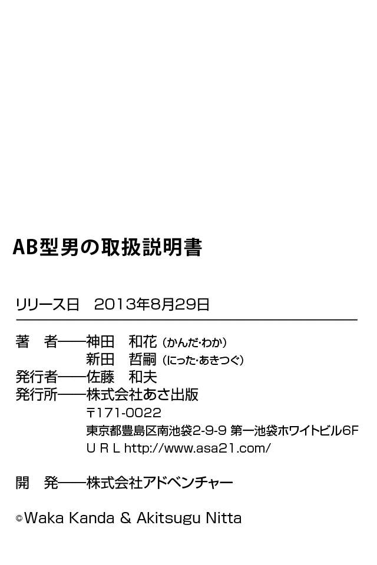